혁신에의 거시적 접근 I
🗣 교수 발언 📄 슬라이드 💡 보충(외부 지식)
Kondratieff 장기파동과 범용기술 (GPT / GDT)
Kondratieff Long Waves; General Purpose Technology / General Dimension Technology — GPT와 GDT
출처
리딩
- Freeman & Perez (1988) Structural crises of adjustment ★Core Reading
수업노트
- 수업노트/W03_강의기록_260919.md §1-1 [P1 03:01–08:23]
- 수업노트/W03_강의기록_260919.md §1-2 [P1 08:23–09:49], Q0 [P1 1:44:47–1:50:29]
한 줄 정의
경제는 50년 안팎의 긴 파도를 타고 움직이며, 그 파도를 만드는 것은 모든 분야에 쓰이는 기술(범용기술, GPT)이다. 증기기관, 철도, 전기, 자동차, 디지털이 차례로 그 역할을 했다. 여기에 교수는 한 가지를 덧붙인다. GPT가 기존 경제로 퍼져 나가는 것이라면, GDT는 아예 자기만의 독립된 차원을 새로 여는 것이다. 블록체인이 그 예다.
쉽게 말하면
GPT는 전기 같은 것이다. 전기가 발명되자 공장, 가정, 병원, 교통 어디에나 들어갔다. 기존 세계 전체가 전기를 쓰게 됐다.
GDT는 인터넷 위의 새 나라 같은 것이다. 비트코인은 기존 금융 시스템에 들어간 게 아니라, 국경도 중앙은행도 없는 별도의 질서를 만들어 버렸다. 기존 세계를 개선한 게 아니라 옆에 다른 세계를 하나 지은 셈이다.
핵심 내용
📄 슬라이드 (W03 p6)
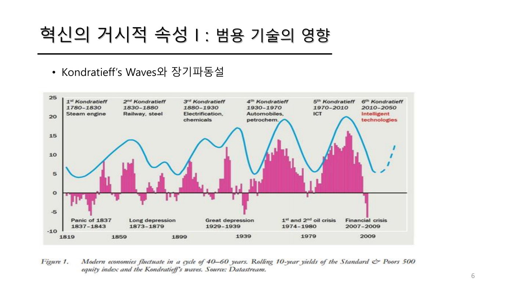
Kondratieff 장기파동
- 🗣 Kondratieff는 러시아 사람으로 회계 쪽 일을 하다 경제학으로 옮겨 장기파동을 제시했고, 후대 학자들이 이어받아 정리했다.
- 🗣 증기기관 → 철도 → 전기화 → 자동차 → 디지털로 이어지며 경제 전체에 영향을 준 흐름. 이것이 3차·4차 산업혁명 논의의 근거로 많이 쓰인다.
- 🗣 파동의 메커니즘: 새 기술이 등장 → 이득을 기대한 투자가 몰림 → 경제 활성화 → 피크에 도달 → 다시 탐색. 물론 투자자가 모두 성공하는 것은 아니다.
- 🗣 ICT는 두 번 정도로 볼 수 있다. 처음엔 단순 온라인화, 지금은 AI로 한 번 더.
범용기술(GPT, General Purpose Technology)
- 🗣 모든 분야에 다 쓰이는 도구가 등장해 경제 전반에 큰 영향을 준다.
- 🗣 다만 이 관점은 상당히 기술결정론적인 이해다. ★ 이 단서가 중요하다 — 뒤에 나올 TEN(W03/05)과 동시 형성(W03/09)이 바로 이 결정론을 교정하는 논의다.
- 🗣 (Q0 보충) GPT는 이미 알려진 개념으로, AI가 의료에도 쓰이고 무기에도 쓰이는 식의 범용성.
GDT (General Dimension Technology) ★
- 🗣 GPT가 경제 전체로 퍼져 나가는 것이라면, GDT는 아예 자기 시스템을 따로 만드는 것이다. 블록체인이 대표적 — 블록체인 자체가 신뢰 구조를 만들어 버렸다.
- 🗣 새로운 세계, 독립적 차원을 연다는 주장이며 Web 3.0과 더 연결된다.
"새로운 독자적인, 내지는 독립적 세계를 만들 수 있다라는 주장을 하죠. 비트코인 같은 것들을 들여다보면 국경을 넘나들면서 서로 간에 생태계를 만들어 버리잖아요. 컨트롤 할 데가 없잖아. 완전히 독립적으로 만들어져 있어."
P1 1:45:49
| GPT | GDT | |
|---|---|---|
| 작동 방식 | 기존 경제 전반으로 확산 | 독립된 차원을 새로 생성 |
| 예 | 증기기관, 전기, 컴퓨터, AI | 블록체인, 비트코인, Web 3.0 |
| 관계 | 기존 질서를 업그레이드 | 기존 질서 옆에 다른 질서 |
🗣 블록체인이 "제도 기술"인 이유, 그리고 그 한계
- 보통 화폐는 중앙은행이 보증하는데 블록체인이 그 보증 기능을 대신한다 → 그래서 제도 기술(institutional technology)이라 부르기도 한다.
- 🗣 그러나 현실에서는 잘 안 되고 있다. 국가가 스테이블코인으로 포섭해 기존 금융 질서 안으로 끌어들였다. 한국은행 총재도 이 문제(국제 결제에서 중개자를 없애는 기술)를 깊이 고민한 것으로 알려져 있다.
- 🗣 가능성: 지역화폐처럼 "부산에서 쓰는 코인" 같은 식으로 차원을 하나 만들 수는 있다.
→ W01/02에서 같은 사례가 나왔다. 🗣 "기술이 신뢰의 기반을 만들었지만 국가를 뛰어넘지는 못했다." 제도가 기술을 테이크오버하는 상호구성의 사례.
수업에서 나온 논점
- Q0 (GPT와 GDT의 차이): 강의 중 언급된 두 약어를 다시 물은 질문. 위 3)에 정리. →
수업노트/W03 §9 Q0 - GPT의 기술결정론적 성격에 대한 단서가 이 주차 전체의 구성을 설명한다. 전반부는 거시(TEP) → 미시(TEN)로 내려가며 결정론을 교정하고, 후반부는 경제학 계보(Smith→Hayek→Potts)로 "그럼 혁신은 어떻게 일어나나"를 다시 묻는다.
보충 사례
- Kondratieff (1892–1938): 소련 경제학자. 자본주의가 장기 파동 속에서 붕괴하지 않고 회복한다고 본 것이 체제와 맞지 않아 숙청되었고 1938년 처형됐다. 💡 이론 자체보다 그 운명이 더 유명하다.
- GPT의 학술적 정의 💡: Bresnahan & Trajtenberg(1995)가 제시한 세 조건 — 광범위한 적용 가능성, 지속적 개선, 보완적 혁신을 유발. 전기·컴퓨터가 전형이고, 최근에는 AI를 GPT로 볼 수 있는지가 논쟁 주제다.
- 생산성 역설(Solow paradox) 💡: "컴퓨터 시대의 증거는 어디에나 있지만 생산성 통계에만 없다"(1987). GPT는 도입 즉시 생산성을 올리지 않고, 보완 투자와 조직 변화가 쌓인 뒤에야 효과가 나타난다. 🗣 "넘어가는 게 쉬운 일이 아니다"(W03/03)와 통하는 관찰.
수업 프레임에서의 위치
- 이 주차 전반부의 출발점. 거시적 시야에서 시작해 점점 미시로 내려간다.
- W03/02(TEP)가 이 파동론을 체계화한 것이고, W03/03(파도형·동심원형)이 교수가 여기에 붙인 실천적 구분이다.
- GPT의 기술결정론은 W03/09의 동시 형성에서 교정된다. W01/02 Geels의 세 축 상호구성과 같은 자리.
- GDT와 블록체인 사례는 W01/02에서 이미 나왔고, W03/12의 제도·거버넌스 논의로 이어진다.
예상 퀴즈 포인트
-
1
서술형
Kondratieff 장기파동의 메커니즘을 설명하고, 범용기술(GPT)이 그 파동에서 하는 역할을 서술하라.
-
2
비교형
★ GPT와 GDT의 차이를 블록체인 사례로 설명하라.
-
3
서술형
GPT 논의가 "기술결정론적"이라는 비판을 받는 이유는 무엇이며, 이 주차에서 그것이 어떻게 교정되는가?
기술경제패러다임(TEP)과 혁신의 네 층위
Techno-economic Paradigm (Freeman & Perez 1988); Four Levels of Innovation — Freeman & Perez (1988)
출처
리딩
- Freeman & Perez (1988) Structural crises of adjustment, business cycles and investment behaviour ★Core Reading
수업노트
- 수업노트/W03_강의기록_260919.md §1-3 [P1 09:49–12:05]
한 줄 정의
경제에는 한 시대를 지배하는 상식의 묶음이 있다. 무엇이 싸고 무엇이 비싼지, 공장을 어떻게 짓고 사람을 어떻게 쓰는지에 대한 통념이다. 그 중심에는 값싸고 어디에나 쓰이는 핵심 요소(key factor)가 있다. 면방직의 수력, 증기기관의 석탄, 중공업의 철, 대량생산의 석유, 정보통신의 반도체 칩. 이것이 바뀌면 패러다임이 통째로 바뀐다. 지금은 그 자리에 GPU가 들어섰다.
쉽게 말하면
건축에 비유하면, 한 시대마다 "제일 싸고 흔한 자재"가 정해져 있다. 나무가 흔하던 시절의 건물, 철이 싸진 뒤의 건물, 콘크리트가 싸진 뒤의 건물은 생김새부터 다르다. 자재만 바뀌는 게 아니라 설계하는 법, 기술자를 기르는 법, 법규까지 다 따라 바뀐다.
기술경제패러다임이 그것이다. 핵심 자재가 바뀌면 공장 배치, 조직 구조, 교육, 금융 관행까지 줄줄이 바뀐다.
핵심 내용
📄 슬라이드 (W03 p7)
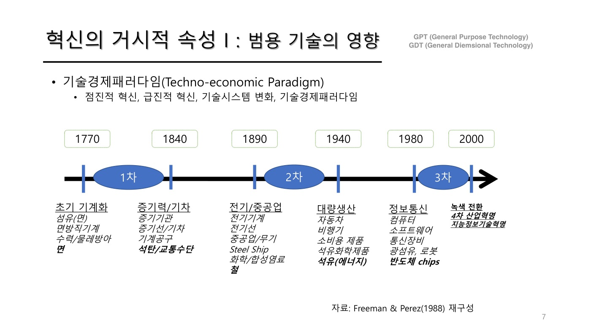
패러다임의 이동 ★
🗣 Freeman & Perez의 기술경제패러다임(Techno-economic Paradigm): 패러다임이 한 번씩 통째로 바뀐다.
| 시기 | 패러다임 | 핵심 요소 |
|---|---|---|
| 1차 | 초기 기계화 | 면방직, 수력 |
| 2차 | 증기력·기차 | 석탄 |
| 3차 | 전기·중공업 | 철 |
| 4차 | 대량생산(포드주의) | 석유 |
| 5차 | 정보통신 | 반도체 칩 |
| 6차 | 녹색 전환·4차 산업혁명 | (진행 중) |
🗣 지금의 핵심 요소는 GPU다 ★
- 🗣 지금은 반도체 칩이 아니라 GPU가 핵심 요소가 되어 버렸다. AI가 오면서 NVIDIA가 그 자리를 차지했고, 거기 들어가는 HBM 때문에 하이닉스가 따라붙었다.
- 🗣 다른 것으로 또 바뀔 수 있어 다들 열심히 개발 중.
이 관찰이 중요한 이유: 핵심 요소를 쥔 기업이 패러다임 전체의 병목이 된다. W01/11의 병목(bottleneck) 개념과 정확히 겹친다. "왜 NVIDIA가 저 가격을 받나"에 대한 구조적 답이기도 하다.
혁신의 네 층위 ★ (퀴즈 빈출형)
| 층위 | 내용 | 🗣 설명 |
|---|---|---|
| ① 점진적 혁신 (incremental) | 기존 제품·공정의 개선 | DUI 스타일로 우리 생산라인에서 그대로 할 수 있다 |
| ② 급진적 혁신 (radical) | 불연속적인 새 제품·공정 | 우리 생산라인에서 안 나온다. AI도 우리 라인에서 나온 게 아니라 딴 데서 온 것 |
| ③ 기술시스템 변화 | 여러 혁신이 묶여 산업 전반에 영향 | 아예 새로운 시스템이 하나 생기는 것 |
| ④ 기술경제패러다임 전환 | 경제 전체의 상식이 바뀜 | 핵심 요소 교체, 사회 전반의 재조직 |
①과 ②의 구분은 W02-1/03의 DUI/STI와 정확히 대응한다. 🗣 "점진적 혁신은 DUI 스타일", 급진적 혁신은 외부(STI)에서 온다. W02 토론 Q2에서 나온 원자폭탄 예시가 ②의 전형이었다.
수업에서 나온 논점
- W03/03 파도형 vs 동심원형과의 관계: 교수의 구분은 이 네 층위를 실천 전략의 언어로 바꾼 것이다. 파도형은 ②③④ 쪽, 동심원형은 ①을 중심으로 ③까지 끌어올리는 작업.
- W03 Q5 (시스템 혁신이 따라오게 하는 요인): 🗣 "시스템 혁신은 점진적 혁신과 많이 다르다." 점진적 혁신은 어제보다 조금 낫게 하면 되지만, 급진적 혁신은 기존에 하던 것과 전혀 다른 일이 벌어진다. →
수업노트/W03 §9 Q5
보충 사례
- Carlota Perez Technological Revolutions and Financial Capital(2002): 각 패러다임이 도입기(installation)와 전개기(deployment)로 나뉘고, 그 사이에 금융 거품과 붕괴가 낀다고 본다. 철도 버블, 닷컴 버블이 그 자리. 💡 지금의 AI 투자 과열을 읽는 틀로 자주 인용된다.
- 핵심 요소(key factor)의 조건 💡: ① 비용이 급격히 떨어지고 ② 공급이 사실상 무한해 보이며 ③ 어디에나 쓰인다. GPU가 ①을 만족하는지는 논쟁적이지만(오히려 비싸졌다), ②③은 들어맞는다.
- 패러다임이라는 말의 출처: Kuhn의 과학혁명 개념을 경제·기술 영역으로 옮긴 것. 그래서 "통약 불가능"처럼 이전 패러다임의 기준으로는 새 패러다임을 평가하기 어렵다는 함의가 따라온다.
수업 프레임에서의 위치
- W03/01의 장기파동을 이론으로 체계화한 것. Freeman & Perez가 이 주차 전반부의 Core Reading이다.
- 네 층위는 이 수업 전체의 분석 단위 지도이기도 하다. W01/10의 세 유형(구조의 차이/변화/기작)과 함께 쓰면 좌표가 선명해진다.
- TEP의 거시적 결정론이 W03/05 TEN에서 비판받고, W03/09에서 둘이 종합된다.
예상 퀴즈 포인트
-
1
서술형
★ 기술경제패러다임의 이동을 핵심 요소(key factor)를 중심으로 서술하라. 지금의 핵심 요소는 무엇인가?
-
2
비교형
★ 혁신의 네 층위를 쓰고 각각을 설명하라. 점진적 혁신과 급진적 혁신의 차이를 "우리 생산라인" 비유로 설명하라.
-
3
비교형
비교형: 혁신의 네 층위와 STI/DUI 학습 모드의 대응 관계를 설명하라.
★ 파도형 혁신 vs 동심원형 혁신
Wave-type vs Concentric-circle Innovation (교수 coining) — 교수가 직접 붙인 구분 — 이 수업에서 반복해 쓰일 핵심 프레임
출처
수업노트
- 수업노트/W03_강의기록_260919.md §2 [P1 12:05–18:55]
- 수업노트/W03_강의기록_260919.md §9 Q4 [P2 08:33–16:52]
한 줄 정의
혁신에는 두 종류가 있다. 파도형은 새로운 과학기술로 원래 없던 것이 생기는 것이다(컴퓨터, 인터넷, AI). 동심원형은 기존 산업이 새 기술로 탈바꿈·업그레이드하는 것이다(스마트 팩토리, DX). 우리는 보통 파도형만 이야기하지만, 🗣 "공군이 AI를 만들 일은 아니잖아" — 대부분의 조직에 필요한 것은 동심원형이다.
쉽게 말하면
- 파도형: 바다에 새 파도가 밀려온다. 없던 물결이 바깥에서 들어온다.
- 동심원형: 잔잔한 물에 돌을 던진다. 이미 있는 물 위에서 파문이 중심부터 바깥으로 퍼진다.
AI를 만드는 회사는 몇 안 되지만, AI를 써서 자기 일을 바꿔야 하는 조직은 전부다. 파도를 만드는 사람보다 파문을 일으켜야 하는 사람이 훨씬 많다.
핵심 내용
📄 슬라이드 (W03 p8)
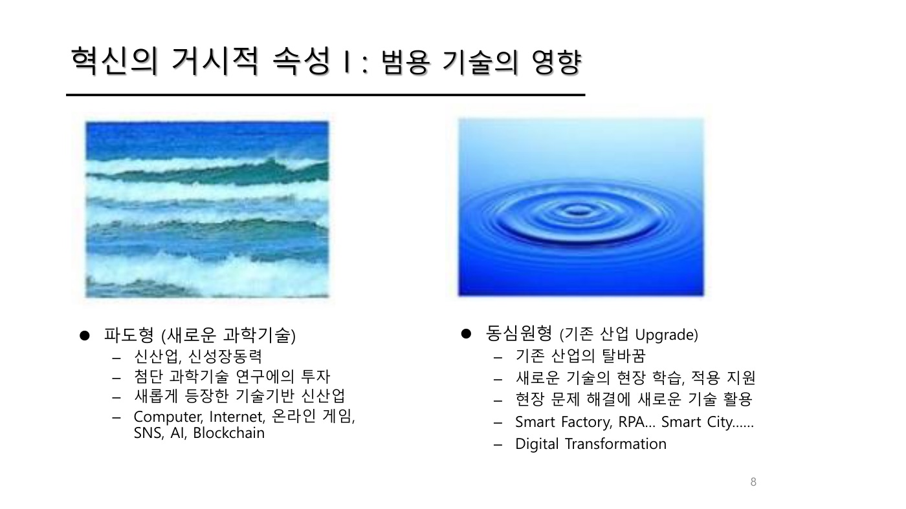
두 혁신의 비교 ★
| 파도형 (새로운 과학기술) | 동심원형 (기존 산업 Upgrade) | |
|---|---|---|
| 성격 | 새로운 과학기술로 원래 없던 것이 생김 | 기존 산업의 탈바꿈 |
| 📄 대상 | 신산업, 신성장동력 / 첨단 과학기술 연구에의 투자 | 새로운 기술의 현장 학습·적용 지원 / 현장 문제 해결에 새 기술 활용 |
| 📄 예 | Computer, Internet, 온라인 게임, SNS, AI, Blockchain | Smart Factory, RPA, Smart City, Digital Transformation |
| 학습 모드 💡 | STI 중심 (외부에서 온다) | DUI 중심 + STI 결합 |
| 혁신 층위 💡 | 급진적 혁신·패러다임 전환 | 점진적 혁신 → 기술시스템 변화 |
🗣 우리는 파도형만 이야기한다 ★
- 🗣 "AI 만들어야 된다, 로봇 만들어야 된다"는 말만 한다. 그런데 업그레이드 쪽도 엄청나게 크다.
"공군도 업그레이드, 석유화학도 업그레이드. 다 업그레이드해야 되는 거지, 공군이 AI를 만들 일은 아니잖아."
P1 14:21
- 이 한 문장이 이 개념의 핵심이다. 정책도 기업 전략도 "새 기술을 만드는 쪽"에만 자원을 쏠리게 하는데, 대부분의 조직에 필요한 것은 쓰는 쪽이다.
🗣 일본은 왜 뒤졌나 — 동심원형의 실패
- 🗣 업그레이드가 잘 안 된 것. 일본은 자기들끼리 파고들어 점진적 혁신은 잘하는데 판을 바꾸는 일을 잘 못한다.
- 🗣 한국은 삼성전자 같은 하드웨어 회사가 소프트웨어를 하려니 엄청 고생했지만, IMF 때문에 어쩔 수 없이 받아들일 수밖에 없었던 면이 분명히 있다. 네이버·카카오 같은 회사도 그 흐름에서 나왔다. 국가가 꽉 쥐고 있던 것을 못 쥐게 된 것.
흥미로운 역설이다. 일본은 점진적 혁신(DUI)을 가장 잘하는 나라로 꼽혔는데(카이젠), 바로 그 강점이 동심원형 혁신을 막았다. W02-1/03의 DUI lock-in, W01/05의 조직 고착이 국가 수준에서 나타난 사례로 읽을 수 있다.
🗣 넘어가는 것은 쉽지 않다 ★
- 패러다임이 "빵 때리면 쭉 간다"고 생각하기 쉽지만 넘어가는 게 쉬운 일이 아니다. 거기 있는 사람을 당겨 줘야 넘어간다. 원래 있던 사람들이 버티면 안 넘어간다.
- 미국도 AI 데이터센터 반대 등으로 난리다. 미국조차 신기술에 대한 사회적 토론 경험이 많지 않았다는 뜻.
→ 이 문제의식이 W03/05 TEN("왜 기술이 안 퍼지나")과 W03/18(혁신의 사회적 허용)으로 이어진다.
산업정책에 주는 함의 📄 (p9)
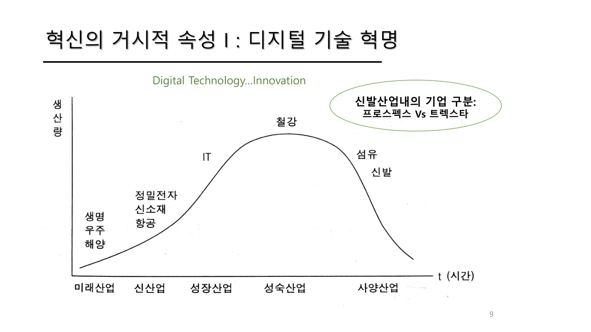
- 🗣 교과서적 산업정책은 미래산업·성장산업에 투자하고 사양산업은 뺀다. 틀린 말은 아니다.
- 🗣 그러나 신발산업 안에서도 갈린다:
- 프로스펙스처럼 공장을 외국으로 빼는 길
- 부산의 작은 회사 트렉스타는 맞춤형·소재 중심으로 업그레이드했다
- 🗣 제조 역량은 가지고 있어야 한다. 역량을 유지하며 업그레이드하는 게 맞지, 통째로 빼는 게 아니다.
즉 "사양산업"이라는 분류 자체가 게으른 것이다. 산업이 사양인 게 아니라 그 산업 안에서 업그레이드를 했느냐 안 했느냐가 갈린다. W02-1/08의 생산 능력 → 기술 역량 업그레이드와 같은 주장.
수업에서 나온 논점
- ★ Q4 (김예나, 기업 안에서도 지식 공유지를 시도할 수 있을까): 사내 AI 개방 후 실험이 위축된 사례에 대해 🗣 교수가 "이 사례 자체가 동심원형 혁신의 Phase 0"이라고 명명했다.
"동심원형을 지금 하신 거죠. AX로 내 업무를 어떻게 바꿀 것이냐 했을 때 벌어진 일인데, 이게 될지 안 될지 잘 모르잖아요. 처음 한동안은 불확실성 속에 놓일 수밖에 없는 상황인데, 그거를 디폴트로 인정하고 가준다면 사람들이 집에서 따로 하지 않고 편안하게 동심원형 혁신을 할 수 있었을 텐데. 거기서도 Stage 0가 벌어질 수 있다는 말씀."
P2 12:35
→ ★ Term paper 후보 (수업노트 정제 노트에도 표시). 동심원형 혁신 + Phase 0를 결합한 사내 케이스 스터디. 교수가 직접 틀을 잡아 준 대목이라 분석 프레임이 바로 선다.
- Q5 (시스템 혁신이 따라오게 하는 요인): 🗣 "동심원형 혁신은 대개 시스템 혁신을 동반한다." 작은 조직은 시행착오로 바꿀 수 있지만 큰 조직은 "도저히 안 되겠다" 싶어야 움직인다. 그래서 문화적 측면이 중요하다.
"변화의 네트워크에 계속 타이핑이 돼 있어야 돼요. 그러지 않으면 나중에 진짜 변해야 될 시간에 못 만들어 갈 수도 있어."
P2 21:35
- Q6 보충: 🗣 "AI 파운데이션 모델을 만드는 것만 특징이 되어 있지, 그게 동심원형 혁신으로 쫙 퍼져 나가서 실제로 그래야 되는데." → 한국 AI 정책 비판.
- Q3 (석유화학 현장의 DX 거부): 동심원형 혁신이 현장 저항에 막히는 사례. → W02-1/06 불만족스러운 혁신과 직결.
보충 사례
- 트렉스타: 부산 기반 등산화 회사. 발 모양 데이터를 축적해 아시아인 발에 맞는 라스트(신발 골)를 개발하고 소재·기능 중심으로 전환했다. 💡 "사양산업"으로 분류된 신발 산업 안에서 동심원형 업그레이드를 한 사례로 교수가 반복 인용하는 듯하다.
- 일본의 갈라파고스화 💡: 휴대폰·전자화폐 등에서 기술 수준은 높았지만 국내 시장에 최적화되어 세계 표준에서 밀려난 현상. 점진적 혁신의 과잉이 전환을 막은 사례로 자주 거론된다.
- 두 혁신에 필요한 정책이 다르다: 파도형은 R&D 자금과 인재가 핵심이고, 동심원형은 현장 학습 지원, 컨설팅, KIBS 접근, 조직 변화 관리가 핵심이다. 같은 예산을 써도 집행 방식이 달라야 한다는 함의.
수업 프레임에서의 위치
- ★ 이 수업의 실천적 핵심 프레임. 교수가 직접 만든 구분이라 강의 내내 되돌아온다.
- W03/02 혁신의 네 층위를 전략 언어로 번역한 것.
- W03/15 Phase 0/1/2와 교차하면 2×3 매트릭스가 된다. 🗣 Q4에서 "동심원형 혁신의 Phase 0"라는 조합이 실제로 쓰였다.
- W01/05 세 가지 고착과 직결: 동심원형이 어려운 이유가 곧 조직·기술·사용자 고착이다.
- W02-1/12의 "전통 제조업은 DUI에 STI를 결합하라"가 동심원형 혁신의 학습론 버전.
예상 퀴즈 포인트
-
1
비교형
★ 파도형 혁신과 동심원형 혁신을 정의하고 각각의 예를 들어 비교하라.
-
2
서술형
★ "공군이 AI를 만들 일은 아니다"라는 말이 산업정책에 주는 함의를 서술하라.
-
3
서술형
일본이 뒤처진 이유를 두 혁신 유형으로 설명하라. 점진적 혁신의 강점이 왜 약점이 되었는가?
-
4
서술형
응용: 자신이 속한 조직에서 동심원형 혁신이 필요한 영역은 무엇이며, 무엇이 그것을 막고 있는가? (term paper 연결)
디지털 기술혁명의 3단계
Digitization / Digitalization / Digital Transformation (Savic 2019) — Digitization → Digitalization → Digital Transformation
출처
리딩
- Savic (2019)
수업노트
- 수업노트/W03_강의기록_260919.md §3 [P1 18:55–24:57]
- 수업노트/W03_강의기록_260919.md §9 Q1 [P1 1:50:29–1:58:06]
한 줄 정의
디지털 전환은 한 덩어리가 아니라 세 단계다. Digitization은 아날로그를 디지털로 바꾸는 것(데이터 변환), Digitalization은 그 디지털로 업무를 자동화하는 것(정보 처리), Digital Transformation은 일하는 방식과 문화 자체가 바뀌는 것(지식 활용)이다. 많은 조직이 DX를 한다면서 실제로는 Digitalization에서 멈춘다.
쉽게 말하면
🗣 교수가 든 고문서 예시가 가장 선명하다.
| 단계 | 고문서로 하면 |
|---|---|
| Digitization | 고문서를 스캐닝한다 |
| Digitalization | PDF로 만들어 도서관에서 대출자에게 제공한다 |
| Digital Transformation | AI가 한자 고문서를 읽어 한글로 번역하고 소설로 만들어 준다 |
1단계는 종이가 파일이 된 것뿐이고, 2단계는 빌려주는 과정이 편해진 것이다. 3단계에 와서야 전에 없던 일이 가능해진다.
핵심 내용
📄 슬라이드 (W03 p10)
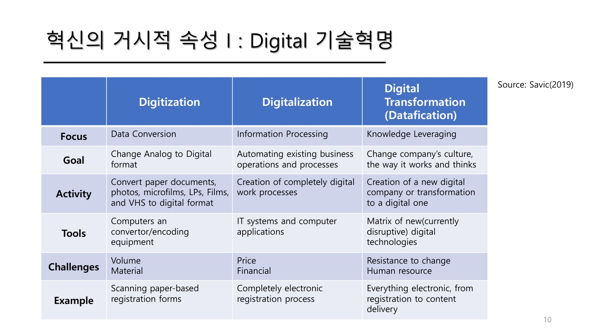
세 단계 ★
| 단계 | 📄 초점 | 🗣 고문서 예시 | 기업 관점 |
|---|---|---|---|
| Digitization | 데이터 변환 (아날로그 → 디지털) | 고문서를 스캐닝한다 | 포맷 전환 |
| Digitalization | 정보 처리 (업무 프로세스 자동화) | PDF로 만들어 도서관에서 대출자에게 제공한다 | 업무·프로세스 자동화 |
| Digital Transformation (Datafication) | 지식 활용 (문화·일하는 방식 자체의 변화) | AI가 한자 고문서를 읽어 한글로 번역하고 소설로 만들어 준다 | 조직 문화와 일하는 방식의 변화 |
- 🗣 결국 지금 AI가 하는 일이 3단계다.
- 🗣 이 영역의 리터러시는 한국이 아마 가장 높을 것이다.
🗣 왜 어려운가 — 다섯 가지 장벽
- 데이터 큐레이션
- 암묵지를 데이터로 만드는 일 (→ W02-1/01)
- 일자리 소멸 우려 (→ Q3 석유화학 사례)
- 변화에 대한 저항
- 인적자원 문제
🗣 데이터 공유라는 숙제 ★
- 테슬라 출신으로 현대차에 합류한 인사의 말: "지난 3년간 LLM은 운이 좋았다. 데이터가 이미 깔려 있었으니까." 자동차·피지컬 AI는 상황이 다르다 — 데이터를 직접 만들어야 한다.
- 🗣 문제는 데이터를 공유하지 않는다는 것. 다 자기 바운더리에 두려 한다. 모여야 훈련이 되고 가치가 생기는데.
- 🗣 의료 데이터: 한국은 건강보험 데이터 등 세계적으로 손꼽히는 자산을 가지고 있는데 개인정보 문제로 아직 못 쓰고 있다. 10년도 더 된 논의다.
- 🗣 교수의 자기반성 섞인 일화: 처음 그 얘기를 들었을 때 "민족을 위해서 써야지" 하고 말했더니, 발표자가 "저 사람한테 어디서부터 설명해야 하나" 하는 표정으로 쳐다보더라.
→ ★ 이 "데이터를 안 내놓는다" 문제가 이 주차 후반부의 혁신 공유지(W03/12)로 곧장 이어진다. 🗣 "병원에 데이터가 있을 거 아니야, 모으면 뭐가 될 거야. 못 모아요. 거버넌스 룰이 안 정해진 거."
수업에서 나온 논점
- ★ Q1 (DX와 Digitalization을 고객에게 어떻게 구분해 설명할까) — 한국 오라클 마케팅 담당의 실무 질문. 벤더는 DX를 약속하는데 실행하면 계속 Digitalization으로 축소된다는 고민.
🗣 교수의 세 가지 판단 기준:
- 그 비즈니스에서 데이터가 의사결정에 얼마나 중요한가.
- 의사결정에 중요한 데이터를 모으는 시스템이 갖춰져 있는가.
- 미션이 무엇인가 — 미션이 진짜 문제 해결이면 데이터가 결정적으로 작동하지만, 관리나 프로세스 운영 정도면 자동화 수준에서 멈춘다.
🗣 대비 예시:
- 병원은 전부 데이터 사업이다. 의료 영상을 잘 읽고 편집해 주면 의사의 문제 해결에 딱 필요한 정보가 되므로 업무에 바로 도움이 된다. → DX 가능
- 은행은 다르다. 신용도 평가에 소비 데이터를 쓴다 해도, 고객이 그 판단에 동의할지가 더 결정적이라 아예 그 프로세스를 받지 않을 수도 있다. → Digitalization에서 멈출 수 있음
이 기준이 좋은 이유: "DX냐 아니냐"를 기술 수준이 아니라 의사결정 구조와 미션으로 판별한다. 같은 AI를 깔아도 어떤 조직은 3단계로 가고 어떤 조직은 2단계에 머무는 이유를 설명한다. → 수업노트/W03 §9 Q1
- Q3 (석유화학 현장의 DX 거부): 24시간 교대로 모니터링하던 분들을 모델이 대체하게 되자 "맞는지부터 완전 불신"으로 가서 만들어 놓고도 사장되는 경우. 🗣 "첫 이미지가 굉장히 중요하다." → 3단계의 다섯 번째 장벽(저항)의 실제 모습. W02-1/06 불만족스러운 혁신과 직결.
보충 사례
- Datafication 💡: Mayer-Schönberger & Cukier가 쓴 말로, 전에는 데이터가 아니던 것(위치, 걸음, 표정, 말투)이 데이터가 되는 현상. 슬라이드가 DX 옆에 이 말을 병기한 이유는 3단계가 데이터의 범위 자체를 넓히는 일이기 때문이다.
- 연합학습(federated learning) 💡: Q2에서 교수가 언급한 기술적 우회로. 데이터를 밖으로 내보내지 않고 각 기관 안에서 학습한 결과값(파라미터)만 모으는 방식. 의료 데이터 공유 문제의 현실적 해법으로 자주 제시된다.
- 왜 2단계에서 멈추나: Digitalization은 기존 업무를 그대로 둔 채 빠르게 하는 것이라 조직 개편이 필요 없다. DX는 일하는 방식 자체를 바꾸므로 권한과 조직도가 흔들린다. 그래서 저항이 생기고, 저항을 피하면 자연스럽게 2단계에 머문다. Q1의 "계속 디지털라이제이션으로 축소된다"가 이 구조다.
수업 프레임에서의 위치
- W03/03의 동심원형 혁신이 실제로 어떻게 진행되는지를 단계로 풀어 놓은 것.
- 3단계의 장벽(데이터 공유, 암묵지, 저항)이 이 주차 후반부 전체의 문제의식으로 이어진다. 특히 데이터 공유 → 혁신 공유지(W03/12).
- W01/04의 DX·AX 논의, W02-1/06의 불만족스러운 혁신(한국 DX 정책이 잘 안 됐다)과 같은 줄기.
예상 퀴즈 포인트
-
1
서술형
★ 디지털 기술혁명의 3단계를 정의하고 고문서 예시로 각 단계를 설명하라.
-
2
서술형
★ 많은 조직이 DX를 표방하면서 Digitalization에 머무는 이유를 조직 변화 관점에서 설명하라.
-
3
서술형
DX 여부를 판별하는 세 가지 기준을 쓰고, 병원과 은행의 사례로 적용하라.
기술경제적 네트워크(TEN) — 세 개의 극
Techno-Economic Networks (Callon) — Scientific / Technical / Market Poles — 왜 좋은 기술이 안 퍼지는가
출처
리딩
- Greens et al. (1999) Techno-economic networks vs. paradigms ★Core Reading
- Callon, Laredo 등 프랑스 TEN 논의
수업노트
- 수업노트/W03_강의기록_260919.md §4-1 [P1 24:57–]
- 수업노트/W03_강의기록_260919.md §4-2
한 줄 정의
TEP(W03/02)가 "큰 흐름이 이렇게 간다"는 거시 이론이라면, TEN은 "그런데 현장에서는 왜 안 되지?"를 보는 미시 이론이다. 혁신은 정해진 궤도를 따라가는 것이 아니라, 과학자·엔지니어·사용자·규제자 같은 이질적 행위자들이 연합해 네트워크를 만들어 가는 과정이다. 그 연합이 깨지면 아무리 좋은 기술도 멈춘다.
쉽게 말하면
새 악기를 발명했다고 하자. 소리는 훌륭하다. 그런데 악보를 쓸 기보법이 없고, 가르칠 선생이 없고, 오케스트라에 자리가 없고, 음악원 커리큘럼에도 없다. 악기 자체는 완성됐지만 음악은 연주되지 않는다.
TEN은 이 상황을 본다. 기술만 좋으면 되는 게 아니라 그것을 둘러싼 사람·제도·사물이 모두 제자리를 잡아야 비로소 혁신이 된다.
핵심 내용
📄 슬라이드 (W03 p11–12)
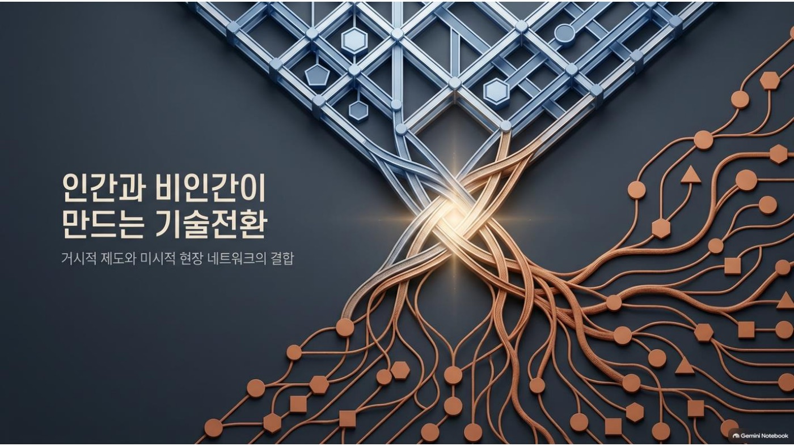
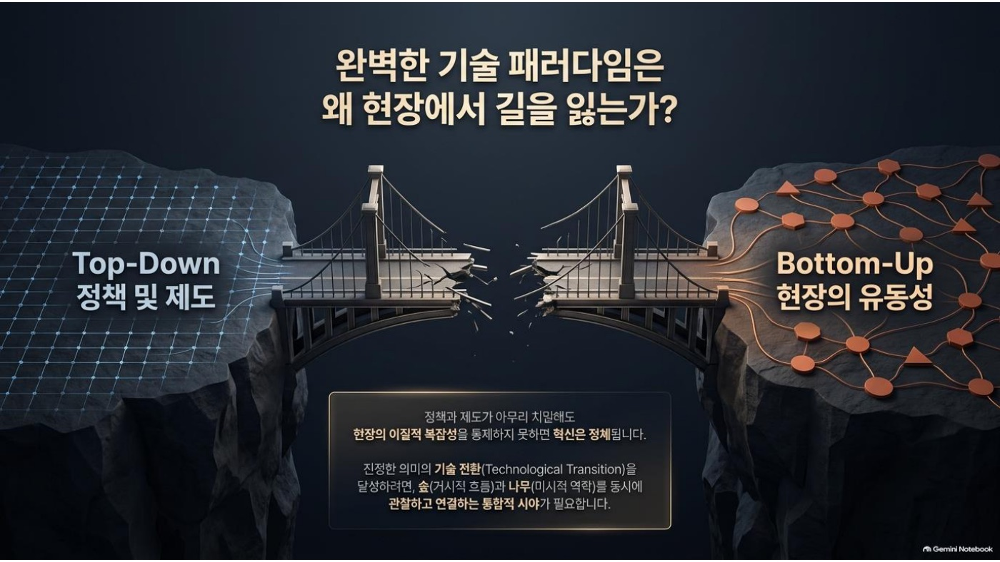
🗣 왜 TEN인가 — 문제의식
- 앞의 내용이 TEP(거시적 패러다임)이었다면, 이제는 TEN(Techno-Economic Networks).
- 🗣 문제의식: 기술이 들어왔으면 쫙 퍼뜨리면 되는 것 아닌가? 왜 잘 안 될까.
- 🗣 범용 기술이 확산될 때 생기는 제도적 저항은 어떻게 벌어지는가 — 타다 사례가 그렇다. 변화에는 이기는 사람과 잃는 사람이 있고, 무엇을 잃는지 정확히 따져 봐야 한다.
이 마지막 문장이 TEN의 실천적 핵심이다. "저항은 비합리적"이라고 치부하지 않고 누가 무엇을 잃는지 구체적으로 분석한다.
📄 Callon의 TEN: 세 개의 극 ★
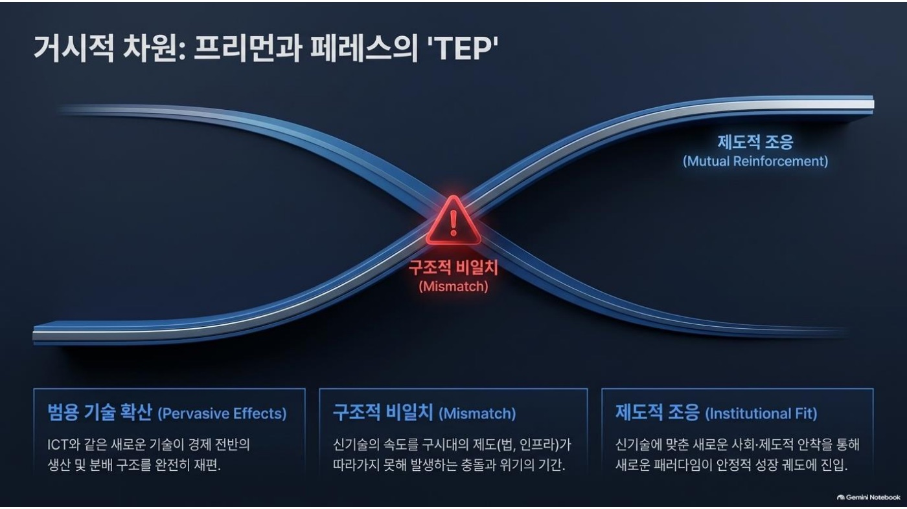
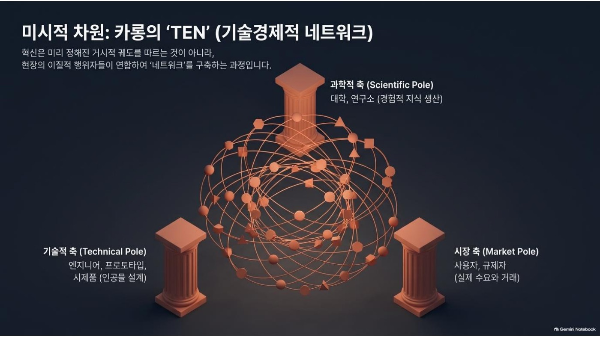
- 🗣 혁신은 미리 정해진 궤도를 따라가는 것이 아니라, 현장의 이질적 행위자들이 연합해 네트워크를 구축하는 과정.
| 극 | 구성 | 역할 |
|---|---|---|
| 과학적 극 (scientific pole) | 대학·연구소 | 원리와 지식 생산 |
| 기술적 극 (technical pole) | 엔지니어·프로토타입 | 구현과 시제품 |
| 시장 극 (market pole) | 사용자·규제자 | 수용과 제도화 |
세 극이 다 있어야 하고, 서로 번역(W03/07)으로 연결되어야 혁신이 완성된다. 하나라도 비면 기술은 실험실이나 창고에 머문다.
왜 세 개의 극인가 — W01/09 계보와의 비교 💡
- W01/09에서 본 혁신시스템론들은 대개 생산자 쪽 행위자(기업·연구소·정부)를 본다.
- TEN은 여기에 사용자와 규제자를 같은 평면에 올린다. 게다가 W03/06에서 보듯 비인간(기술·사물)까지 행위자로 넣는다.
- 그래서 TEN은 혁신시스템론 중에서도 가장 평평한(flat) 분석틀이다. 누가 중심이라고 미리 정하지 않는다.
🗣 엔지니어에게 쓸모 있는 도구
- (전기차 사례 설명 중) 이 관점은 엔지니어 입장에서 꽤 쓸모가 있다. "우리 기술이 이러이러하니 이런 제도가 요구된다"는 식으로 실마리를 풀 수 있다.
- 의사결정 자리에서 재무 담당자만 말하는 것보다 엔지니어가 쓸 수 있는 분석 도구가 된다.
이 코멘트가 중요하다. TEN은 사회학 이론이지만 기술자가 조직 안에서 자기 주장을 구조화하는 언어로 쓸 수 있다는 것.
수업에서 나온 논점
- 타다 사례가 TEN의 대표 예시로 등장한다. W02에서는 Korea Paradox(Q6)의 사례로, W03에서는 제도적 저항의 사례로 쓰였다. 🗣 W02 정리: 타다는 자본과 국가의 싸움이었고, 미국 택시는 고급 서비스·한국 택시는 대중 서비스라 부문(sectoral) 성격의 충돌이 있었다.
- Q8 (플랫폼 규제): 🗣 "게임의 룰을 일방적으로 정하느냐 안 하느냐"가 문제이고, 알고리즘이 actant로 작용한다. → W03/06.
보충 사례
- Michel Callon: 프랑스 파리국립광업학교(École des Mines) 소속으로 Bruno Latour, John Law와 함께 행위자-네트워크 이론(ANT)을 만든 사람. W02-2의 "Is Science a Public Good?"도 같은 저자다. 💡 즉 이 수업에서 Callon은 두 번 등장한다 — 지식의 공공성(재현의 조건)과 TEN(네트워크 구축). 두 논의의 뿌리는 같다. 지식도 기술도 저절로 퍼지지 않고, 사람·장비·제도가 함께 엮여야 작동한다.
- Callon의 가리비 연구(1986) 💡: ANT의 고전. 프랑스 생브리외 만에서 가리비 양식을 시도한 연구자들이 어민·가리비 유생·해류를 어떻게 하나의 네트워크로 엮으려 했고 왜 실패했는지를 추적한다. 가리비가 유생을 붙이지 않자 네트워크가 무너졌다 — 비인간이 연합을 거부한 사례로 유명하다.
- 리딩리스트의 Greens et al. (1999) 💡: W03 Core Reading으로 "Techno-economic networks vs. paradigms"가 올라 있다. 수업노트 정제 노트에 TEN 쪽 맨체스터 연구자 이름이 불명확하다고 표시되어 있는데, 이 논문으로 추정된다.
수업 프레임에서의 위치
- 이 주차 전반부의 후반전. TEP(거시) → TEN(미시)로 내려오는 구조.
- W03/06(비인간의 행위성), W03/07(번역과 스크립트), W03/08(CTA)이 모두 TEN의 하위 도구이고, W03/09에서 TEP와 종합된다.
- W01/02 Geels의 세 축 상호구성과 사실상 같은 문제의식이다. 🗣 수업노트도 "이 구도는 W01의 문제의식 1과 같은 이야기"라고 명시한다.
- W01/11 Innovation Ecosystem과 비교하면 흥미롭다. 둘 다 "여러 행위자의 연합"을 보지만, Ecosystem은 기업의 전략(오케스트레이터) 관점이고 TEN은 대칭적 네트워크(누가 중심인지 미리 정하지 않음) 관점이다.
예상 퀴즈 포인트
-
1
서술형
★ TEN의 세 개의 극을 쓰고 각각을 설명하라. 혁신이 "정해진 궤도를 따라가는 것이 아니다"라는 말의 뜻은?
-
2
서술형
★ TEN이 TEP를 보완하는 지점은 무엇인가? (현장의 이질적 복잡성, 제도적 저항)
-
3
서술형
타다 사례를 TEN의 관점에서 분석하라. 누가 무엇을 잃었는가?
★ 비인간의 행위성 — actant
Agency of Non-humans; Actant (Actor-Network Theory) — 기술도 뭔가를 한다
출처
리딩
- Latour, Callon — Actor-Network Theory
- Winner (1980) Do Artifacts Have Politics?
수업노트
- 수업노트/W03_강의기록_260919.md §4-3 [P1 27:45–]
- 수업노트/W03_강의기록_260919.md §9 Q8 [P2 32:26–37:47]
한 줄 정의
보통 "기술은 쓰기 나름"이라고 생각한다. 행위하는 것은 사람이고 기술은 도구라는 것이다. 행위자-네트워크 이론은 이를 뒤집는다. 기술·사물·알고리즘에도 행위성(agency)이 있다. 즉 그 존재 자체가 뭔가를 한다. 그래서 네트워크 안의 인간과 비인간을 구분하지 않고 작용자(actant)라 부른다.
쉽게 말하면
🗣 교수의 반려견 비유가 이 개념의 핵심이다.
"반려견에 에이전시가 있어요 없어요? 나한테는 있어. 저한테는 얘가 작동하잖아. 걔가 뭐 하자고 그러면 걔한테 맞추잖아. 그게 에이전시가 있다는 얘기지. 내가 주인이라고 이렇게 하는 게 아니고, 걔가 나를 이끌듯이 하는 경우가 있어."
P1 27:45
개를 키우면 산책 시간, 식사 시간, 여행 계획이 개에 맞춰 바뀐다. 주인이 일방적으로 명령하는 관계가 아니다. 개가 내 일상을 재배치한다.
기술도 그렇다. 스마트폰을 "내가 쓰는 도구"라고 생각하지만, 알림이 울리면 하던 일을 멈춘다. 그것이 행위성이다.
핵심 내용
📄 슬라이드 (W03 p13–14)
행위성(agency)의 정의
- 🗣 여기서 재미있는 것은 비인간, 즉 기술에게도 행위성(agency)을 부여한다는 점.
- 🗣 에이전시란 그 존재 자체가 뭔가를 한다는 뜻.
- 🗣 보통 "기술은 쓰기 나름"이라 생각하지만 꼭 그렇지 않다.
알고리즘의 행위성 ★
- 🗣 좋은 것을 보고 훈련받은 알고리즘과 나쁜 것을 보고 훈련받은 알고리즘은 다르고, 알고리즘 자체가 우리를 조정할 수 있다.
- 🗣 우리가 의도하지 않았어도 물리적·기술적 특성 자체가 한 방향을 지시할 수 있다.
→ W01/02에서 나온 이루다 사례(어떻게 교육시키느냐에 따라 AI가 달라진다)와 같은 자리.
원자력 발전의 예 ★★
- 🗣 원자력 발전은 집에서 인터넷 쓰듯 쓸 수 없다 — 반드시 위계적(hierarchical) 구조를 요구한다. 기술 안에 그런 요구가 들어 있다.
이 예가 가장 설득력 있다. 원자력은 안전 규제, 전문 인력, 중앙 통제, 보안, 폐기물 관리를 필연적으로 요구한다. "원자력을 민주적으로 분산 운영하자"는 기술적으로 불가능에 가깝다. 반대로 태양광은 분산형 구조와 잘 맞는다. 즉 에너지원의 선택이 곧 사회 구조의 선택이다.
이것이 Langdon Winner의 "인공물은 정치를 갖는다"(W01/02)와 같은 주장이고, 그중에서도 본질적으로 정치적인 기술(inherently political technology)이라는 더 강한 버전이다.
actant라는 용어 💡
- ANT는 인간 행위자(actor)와 비인간을 함께 부르기 위해 actant(작용자)라는 말을 쓴다.
- 요점은 대칭성(symmetry)이다. 분석할 때 "사람은 능동, 사물은 수동"으로 미리 나누지 않고 똑같이 네트워크의 한 자리로 취급한다.
- 🗣 Q8에서 교수가 이 용어를 직접 썼다: "아까 제가 액턴트 얘기했을 때, 액턴트로 작용을 하는 거예요."
수업에서 나온 논점
- ★ Q8 (빅테크 시대의 플랫폼 규제 — 언제 개입해야 하나): 질문자는 지나는 중에는 그것이 생태계를 위협할 임팩트인지 판단하기 어렵다고 물었다.
"아까 제가 액턴트(actant) 얘기했을 때, 액턴트로 작용을 하는 거예요. 애들이 마음먹으면 우리를 이렇게 할 수 있는 거야. 기술적으로 숨겨져 있어서 그렇지, 들여다보면 그 안에 그게 들어 있는 거."
P2 36:29
"무슨 사기치고 그런 부분이 아니고 게임의 룰을 일방적으로 정하느냐 안 하느냐에 대한 질문이에요. 마켓 셰어가 얼마나 되냐도 문제지만, 마켓셰어를 가졌을 때 룰이 어떻게 세팅되느냐 그 부분이."
P2 36:29
- 🗣 핵심은 소비자의 옵션이 사라지는 것이고, 기술에는 그렇게 만들 가능성이 숨겨져 있다. 알고리즘 자체가 저쪽에서 결정해 버리기 때문.
- 즉 비인간의 행위성은 추상적 철학이 아니라 플랫폼 규제의 실천적 근거가 된다. 규제의 기준을 시장점유율이 아니라 "룰을 누가 세팅하는가"로 옮기는 논리. →
수업노트/W03 §9 Q8
"사람들이 이런 식으로 바라보기도 하는구나, 기술에다가 에이전시를 넣어가지고 분석하기도 하는구나. 이게 AI 같은 게 나오면 더욱더 심각해지는 거죠. 그것이 갖는 의미가 더 드러나는 거죠."
P1 37:28
보충 사례
- Latour의 과속방지턱 💡: "잠자는 경찰(sleeping policeman)"이라 불리는 과속방지턱은, 경찰관이 서서 단속하는 일을 콘크리트 덩어리에 위임(delegation)한 것이다. 사람이 하던 규범 집행을 사물이 대신한다. ANT의 교과서적 예시.
- 추천 알고리즘 💡: 넷플릭스·유튜브의 추천은 "사용자가 고른다"는 외형을 유지하지만, 선택지의 배열 자체를 알고리즘이 정한다. 소비자의 옵션이 사라진다는 🗣의 지적이 가리키는 지점.
- 비판도 알아 둘 것: ANT가 비인간에 행위성을 부여하는 것에 대해 "책임의 소재를 흐린다"는 비판이 있다. 알고리즘이 차별을 했다면 책임은 알고리즘에 있나, 설계자에 있나. ANT는 설명력은 높지만 규범적 판단에는 약하다는 지적. 퀴즈에서 비판적 검토를 요구하면 쓸 수 있는 논점이다.
수업 프레임에서의 위치
- TEN(W03/05)의 가장 독특한 전제. 이것이 있어야 W03/07의 스크립트(기술 안에 대본이 쓰여 있다)가 성립한다.
- W01/02의 ⑤번 화살표(규칙은 인공물의 구성요소)와 Langdon Winner 논의의 심화판.
- W01/03의 "도구를 사용하는 인간"을 뒤집은 것 — 도구도 인간을 사용한다.
- W03/09 동시 형성의 근거. 기술에 행위성이 있으므로 사회가 기술을 일방적으로 빚을 수 없다.
예상 퀴즈 포인트
-
1
서술형
★ 비인간의 행위성(agency)이란 무엇인가? 반려견 비유로 설명하라.
-
2
서술형
★ "원자력 발전은 반드시 위계적 구조를 요구한다"는 말의 뜻과, 그것이 기술 선택에 주는 함의를 서술하라.
-
3
서술형
비판적 검토: 기술에 행위성을 부여하면 책임의 소재가 흐려진다는 비판에 대해 논하라.
번역과 스크립트
Translation and Script (Inscription) — Translation and Script
출처
리딩
- Akrich (1992) The De-scription of Technical Objects
- Callon — translation
수업노트
- 수업노트/W03_강의기록_260919.md §4-4
- 수업노트/W03_강의기록_260919.md §4-5 전기차 사례
한 줄 정의
스크립트는 기술 안에 이미 쓰여 있는 대본이다. 어떤 기술을 쓰려면 사용자가 이렇게 행동하고, 제도가 이렇게 바뀌고, 다른 사물이 이렇게 배치되어야 한다는 지시가 설계 단계에서부터 새겨져 있다. 번역은 그 대본대로 각 행위자를 설득해 네트워크의 한 자리에 등록(enrollment)시키는 작업이다. 하나라도 번역에 실패하면 네트워크는 붕괴한다.
쉽게 말하면
새 보드게임을 샀다고 하자. 상자 안에는 말과 카드만 있는 게 아니라 규칙서가 들어 있다. 그 게임을 하려면 네 명이 모여야 하고, 두 시간이 필요하고, 넓은 탁자가 있어야 한다. 게임이 플레이어의 저녁 일정을 지시하는 것이다.
기술도 이렇게 규칙서를 품고 온다. 다만 눈에 안 보일 뿐이다. 전기차를 사면 충전기, 주차 공간, 전력 계약, 운전 습관, 여행 계획이 줄줄이 따라온다. 그 규칙서를 미리 읽어 내는 것이 스크립트 추출이고, 관련된 모두를 그 규칙에 동의시키는 것이 번역이다.
핵심 내용
📄 슬라이드 (W03 p19–20)
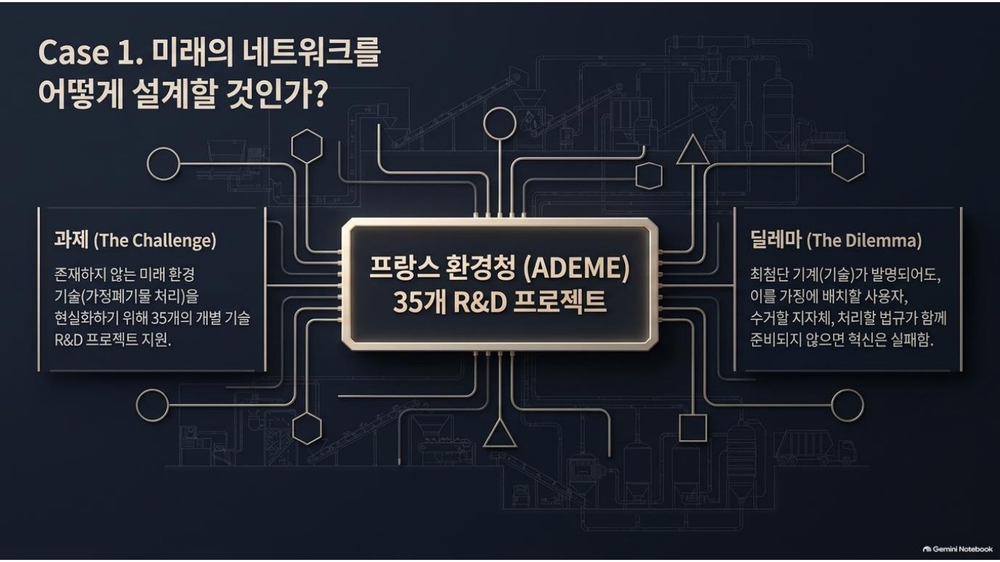
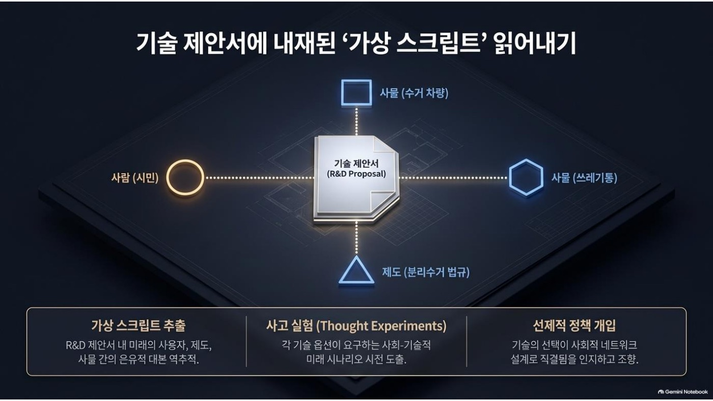
스크립트(script) ★
- 🗣 새 기술이 등장했을 때 사람들 마음대로 되는 게 아니라, 그것을 쓰려면 어쩔 수 없이 따라야 하는 것들이 있다.
→ W03/06의 비인간 행위성이 구체적 형태로 나타난 것. 원자력이 위계적 구조를 요구하는 것이 곧 원자력의 스크립트다.
📄 실천 방안 — 세 단계
- 제안서에서 가상 스크립트를 추출한다.
- 각 기술 옵션이 요구하는 사회-기술적 미래 시나리오를 사고실험으로 미리 뽑아 본다.
- 기술 선택이 곧 사회 네트워크 설계임을 인지하고 조향한다.
③번 문장이 핵심이다. 기술을 고르는 일은 사회를 고르는 일이다. 어떤 기술을 채택하면 그에 맞는 사회 구조가 따라오므로, 기술 선택은 중립적 공학 결정이 아니라 설계된 정치적 선택이 된다.
전기차 사례 ★★ (p21–22)
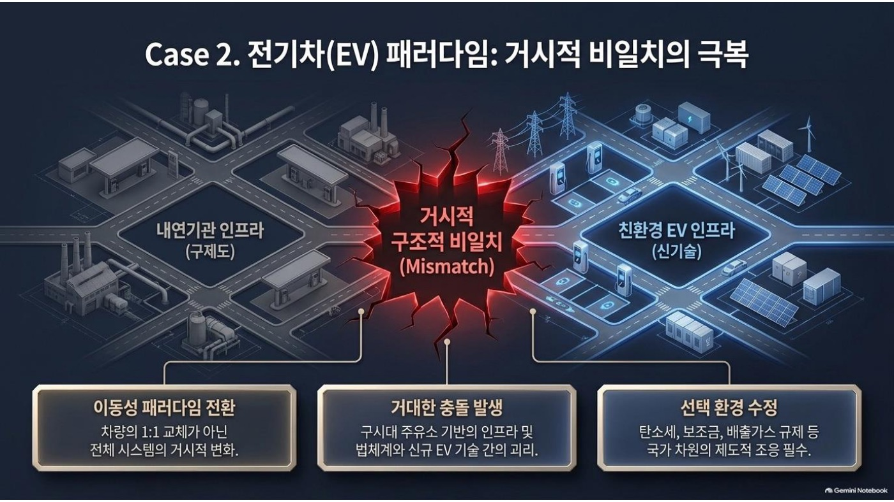
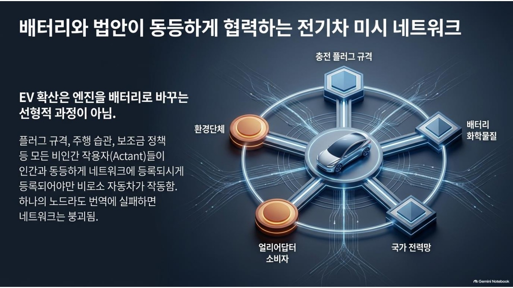
전기차가 좋은 예인 이유: 기술(배터리)은 오래전에 준비됐는데도 보급이 더뎠던 이유가 전부 다른 노드들에 있었다. 충전 규격 표준 전쟁, 아파트 주차장 설치 갈등, 전력망 부하, 보조금 정책의 변동, 겨울철 주행거리에 대한 운전자 불안. 어느 하나만 막혀도 전체가 멈춘다.
🗣 엔지니어의 분석 도구
- 🗣 이 관점은 엔지니어 입장에서 꽤 쓸모가 있다. "우리 기술이 이러이러하니 이런 제도가 요구된다"는 식으로 실마리를 풀 수 있다.
- 🗣 의사결정 자리에서 재무 담당자만 말하는 것보다 엔지니어가 쓸 수 있는 분석 도구가 된다.
실무 번역: 기술 제안서를 쓸 때 "성능이 이렇습니다"에서 끝내지 말고, "이 기술이 작동하려면 이런 제도·조직·습관이 필요합니다"를 함께 제시하라는 뜻. 그것이 스크립트를 명시화하는 일이다.
수업에서 나온 논점
- W01/11 Innovation Ecosystem과의 비교 💡: Adner의 상호의존성 리스크(확률의 곱)가 사실상 같은 이야기다. 파트너 중 하나라도 실패하면 전체가 실패한다는 것. 다만 ANT는 비인간(규격·전력망·습관)까지 노드로 센다는 점에서 더 넓다. ★ 좋은 비교형 답안 소재.
- W03/08 CTA: 스크립트를 미리 읽어 개입하는 방법론이 구성적 기술평가다.
- Q5 (시스템 혁신이 따라오게 하는 요인): 🗣 "동심원형 혁신은 대개 시스템 혁신을 동반한다." 새 기술을 들이면 그 스크립트에 맞춰 조직이 바뀌어야 한다는 뜻.
보충 사례
- Akrich (1992)의 script 개념: 설계자가 사용자에 대한 가정을 기술에 새겨 넣고(inscription), 사용자는 그것을 따르거나 거부·변형(de-scription, anti-program)한다. 💡 즉 스크립트는 강제가 아니라 제안이고, 사용자가 다르게 쓸 여지는 늘 있다. 이 여지가 W12 Social Practice 논의로 이어진다.
- Callon의 번역 4단계 💡: ① 문제화(problematisation, "이 문제의 해법은 나를 거쳐야 한다"고 정의) ② 관심끌기(interessement, 다른 선택지로부터 떼어 놓기) ③ 등록(enrolment, 역할을 받아들이게 하기) ④ 동원(mobilisation, 대표성을 확보하기). 가리비 연구에서 정식화됐다.
- 충전 규격 전쟁 💡: 북미에서 CCS와 테슬라 NACS가 경쟁하다 2023년 이후 완성차 업체들이 NACS로 기울었다. 💡 플러그 모양이라는 사소해 보이는 비인간 노드가 생태계 주도권을 결정한 사례. W01/05의 지배적 디자인·기술 고착과도 겹친다.
수업 프레임에서의 위치
- W03/06(비인간 행위성)의 작동 메커니즘. 행위성이 있다는 주장에서 "그래서 어떻게 분석하나"로 넘어가는 다리.
- W03/08 CTA의 전제. 스크립트를 읽을 수 있어야 개입할 수 있다.
- W01/11 Innovation Ecosystem의 상호의존성 리스크와 같은 현상의 다른 언어.
- W03/09 동시 형성에서 번역(translation)과 각인(inscription)이라는 말로 정리된다.
예상 퀴즈 포인트
-
1
서술형
★ 스크립트(script)란 무엇이며, "기술 선택이 곧 사회 네트워크 설계"라는 말의 뜻을 설명하라.
-
2
서술형
★ 전기차 확산을 번역과 등록의 관점에서 분석하라. 어떤 비인간 작용자들이 네트워크에 등록되어야 하는가?
-
3
비교형
비교형: ANT의 번역 실패와 Adner의 상호의존성 리스크(확률의 곱)를 비교하라. 두 틀의 공통점과 차이는?
구성적 기술평가(CTA)
Constructive Technology Assessment — Constructive Technology Assessment
출처
리딩
- Rip, Misa & Schot (1995) Managing Technology in Society
수업노트
- 수업노트/W03_강의기록_260919.md §4-6
한 줄 정의
기술이 다 만들어진 뒤에 "이거 괜찮은가?"를 묻는 것이 아니라, 개발 과정 안으로 사회적 고려를 미리 집어넣는 접근이다. 유럽에서 활발히 논의됐다. 세 가지 개입 전략이 있다. 대안을 더 만들고(변이 창출), 선택의 조건을 바꾸고(선택 환경 수정), 개발자와 규제자를 잇는 사람을 두는 것(기술적 넥서스)이다. 다만 🗣 교수의 평가는 냉정하다. 그러는 사이 미국·중국이 밀고 들어왔다.
쉽게 말하면
음식에 비유하면,
- 전통적 기술평가: 요리가 다 나온 뒤 먹어 보고 "짜다/싱겁다"를 판정한다. 이미 늦었다.
- CTA: 조리 과정에 들어가 간을 보면서 같이 만든다. 재료를 더 준비해 두고(변이), 불 세기와 양념 가격을 조정하고(선택 환경), 주방과 손님 사이를 오가며 통역하는 사람을 둔다(넥서스).
문제는 이렇게 하면 요리가 늦게 나온다는 것이다. 옆집은 벌써 배달을 시작했다. 🗣의 평가가 바로 이 지점이다.
핵심 내용
📄 슬라이드 (W03 p17–18, p23)
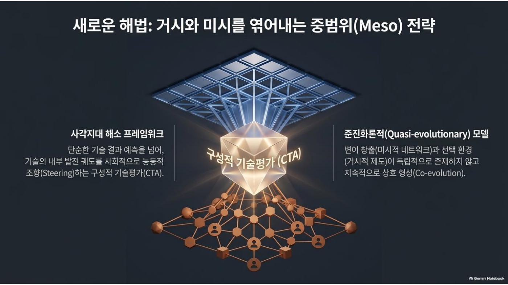
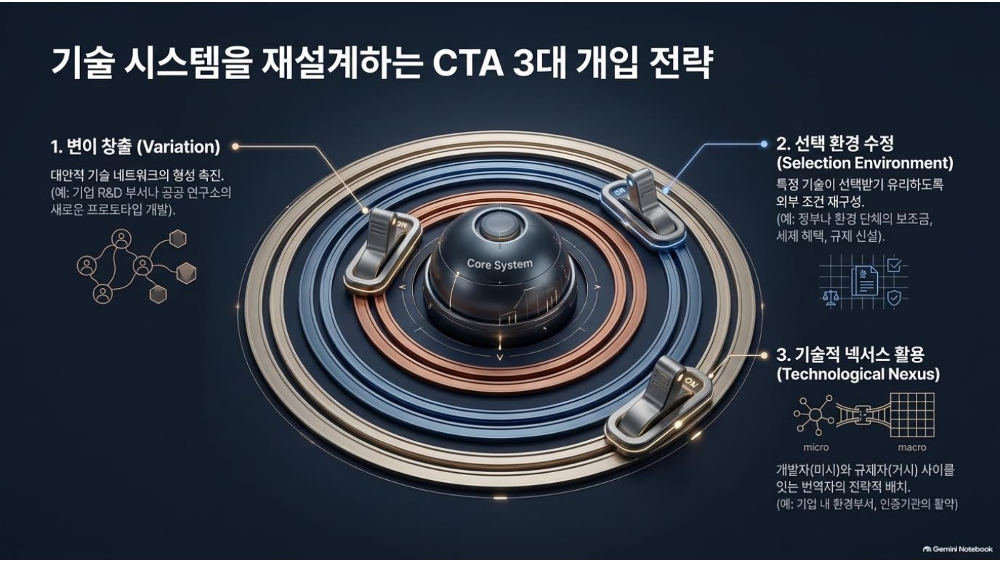
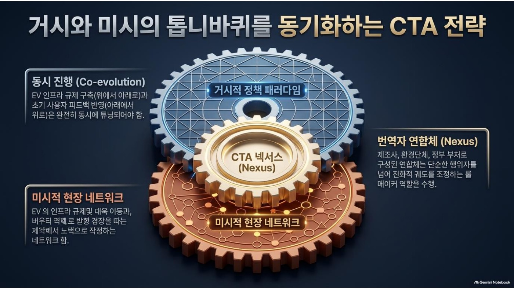
CTA란
- 🗣 CTA(Constructive Technology Assessment): 유럽에서 한참 논의됐다. 사회의 입장에서 기술을 어떻게 받아들일 것인가를 고민하는 접근.
- 기존의 기술영향평가(TA)가 사후 예측·경고에 가까웠다면, CTA는 개발 과정에 개입해 기술의 모양 자체를 바꾸려 한다. "Constructive"라는 말이 그 뜻이다.
세 가지 개입 전략 ★
| 전략 | 📄 내용 | 💡 실제로 무엇을 하나 |
|---|---|---|
| ① 변이 창출 | 대안적 기술 네트워크 형성 촉진 | 하나의 기술 경로만 남지 않도록 대안을 복수로 키운다 |
| ② 선택 환경 수정 | 보조금·세제·규제로 외부 조건 재구성 | 어떤 기술이 살아남을지를 결정하는 운동장의 기울기를 바꾼다 |
| ③ 기술적 넥서스 활용 | 미시 개발자와 거시 규제자를 잇는 번역자 배치 | 양쪽 언어를 다 아는 사람을 중간에 둔다 |
①②는 진화론의 변이(variation)와 선택(selection) 구조를 그대로 가져온 것이다. W01/05에서 🗣 교수가 말한 "고착을 깨려면 새로운 변이(variety)를 만들어야 한다"와 정확히 같은 논리.
사례와 🗣 냉정한 평가 ★
- 🗣 교수의 평가: 결과적으로 기술 진도가 잘 안 나갔다. 그러는 사이 미국·중국이 밀고 들어왔다.
이 평가가 중요하다. CTA는 규범적으로 옳지만 속도의 대가를 치른다. 사회적 합의를 충분히 거치면 기술은 늦어지고, 그 사이 합의 절차가 약한 경쟁자가 시장을 가져간다. 이것이 혁신 거버넌스의 근본 딜레마다.
→ 같은 긴장이 W03/18(혁신의 사회적 허용)에서 다시 나온다. 🗣 McCloskey의 "Leave me alone"과 시민 승인 사이의 균형 문제.
Collingridge 딜레마 💡
CTA가 풀려는 문제의 정식 이름이다.
- 기술이 초기에는 바꾸기 쉽지만 영향을 알 수 없고,
- 영향이 드러날 때쯤에는 이미 고착되어 바꾸기 어렵다.
CTA의 답은 "그래도 초기에 개입하되, 예측이 아니라 학습과 조정으로 하자"는 것이다. 완벽히 예측할 수 없으니 계속 피드백을 받으며 방향을 튼다.
수업에서 나온 논점
- Q8 (플랫폼 규제의 개입 시점): 질문자가 "지나는 중에는 판단이 너무 어렵다"고 한 것이 정확히 Collingridge 딜레마다. 🗣 답은 "게임의 룰을 일방적으로 정하느냐"를 기준 삼으라는 것. →
수업노트/W03 §9 Q8 - W03/12 혁신 공유지와의 대비 💡: CTA는 위에서 설계하는 접근(정부가 변이를 만들고 선택 환경을 바꾼다)이고, Potts의 혁신 공유지는 아래에서 모이는 접근(참여자들이 스스로 거버넌스를 만든다)이다. 둘 다 "기술 발전의 초기 단계에 개입한다"는 문제의식은 같지만 주체가 다르다. ★ 비교형 소재.
보충 사례
- Rip, Misa & Schot (1995) Managing Technology in Society가 CTA의 대표 문헌. 네덜란드 트벤테대 그룹(Arie Rip, Johan Schot)이 중심이었다. 💡 Schot은 W01 Core Reading(Schot & Steinmueller 2018 세 프레임)의 저자이기도 하다. 같은 계보가 나중에 전환적 혁신정책으로 발전한다.
- 나노기술 CTA 💡: 2000년대 유럽에서 나노기술 개발 초기에 윤리·안전 논의를 병행한 사례. GMO에서 겪은 사회적 거부(W01/07, W02-1/06)를 되풀이하지 않으려는 학습의 결과였다.
- 한국의 대응물: 기술영향평가 제도가 과학기술기본법에 따라 운영되지만, 사후 보고서 성격이 강해 CTA가 말하는 "개발 과정 개입"과는 거리가 있다는 지적이 있다. 🗣 Q8의 "지나는 중에는 판단이 어렵다"는 실무 고민과 통한다.
수업 프레임에서의 위치
- W03/05–07(TEN·행위성·스크립트)이 분석 도구라면 CTA는 개입 도구다. 분석에서 실천으로 넘어가는 지점.
- W01/06의 전환 실패(방향성·수요 표출·조율·성찰) 처방과 겹친다. 특히 ③ 넥서스가 조율 실패에, ① 변이 창출이 방향성 실패에 대응한다.
- W03/18 혁신의 사회적 허용, W13 MOIP로 이어지는 참여적 거버넌스 계보의 출발점.
예상 퀴즈 포인트
-
1
서술형
★ CTA의 세 가지 개입 전략을 쓰고 각각을 설명하라.
-
2
서술형
★ 교수가 CTA에 대해 "기술 진도가 잘 안 나갔고 그 사이 미국·중국이 밀고 들어왔다"고 평가한 것의 함의를 논하라. 사회적 합의와 속도의 딜레마를 어떻게 볼 것인가?
-
3
비교형
비교형: CTA(위로부터의 설계)와 혁신 공유지(아래로부터의 자발적 거버넌스)를 비교하라.
TEP vs TEN과 사회–기술적 동시 형성
TEP vs TEN; Socio-technical Co-construction — 거시와 미시를 묶는 결론
출처
리딩
- Freeman & Perez (1988)
- Greens et al. (1999)
- Geels (2004) ★PDF 보유
수업노트
- 수업노트/W03_강의기록_260919.md §4-7, §4-8 [P1 ~37:13]
한 줄 정의
TEP는 거시에서 큰 흐름을 보고 TEN은 미시에서 현장의 얽힘을 본다. 둘은 서로의 맹점을 메운다. TEP는 결정론에 빠지고, TEN은 방향성을 잃는다. 이 주차 전반부의 결론은 둘을 묶는 것이다. 기술이 사회를 결정하는 것도, 사회가 기술을 마음대로 빚는 것도 아니다. 둘은 서로를 번역하고 각인하며 함께 자란다(동시 형성).
쉽게 말하면
강과 물길의 관계와 같다.
- 물(기술)이 지형을 깎아 물길을 만든다 — 기술이 사회를 바꾼다.
- 동시에 지형(사회)이 물이 어디로 흐를지를 정한다 — 사회가 기술을 규정한다.
"물이 먼저냐 지형이 먼저냐"는 틀린 질문이다. 둘은 동시에 서로를 만든다. 멀리서 보면 큰 물줄기의 방향이 보이고(TEP), 가까이서 보면 돌 하나 때문에 물길이 갈라지는 게 보인다(TEN). 둘 다 봐야 한다.
핵심 내용
TEP와 TEN 비교 ★★ (퀴즈 1순위)
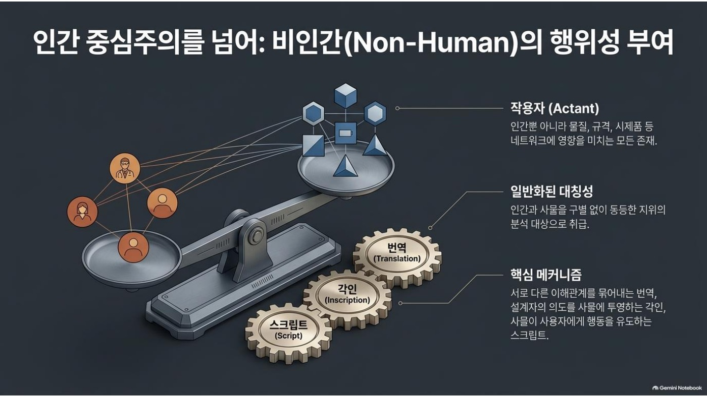
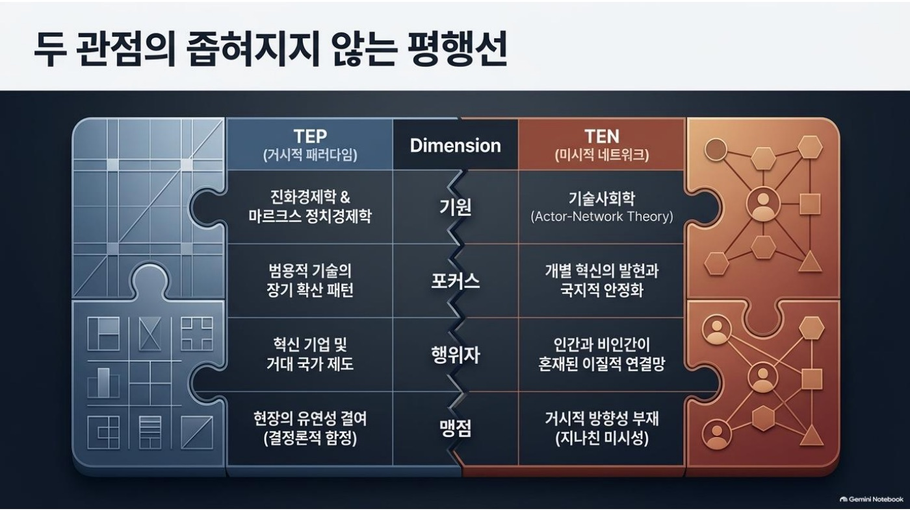
| 차원 | TEP (거시적 패러다임) | TEN (미시적 네트워크) |
|---|---|---|
| 기원 | 진화경제학 & 마르크스 정치경제학 | 기술사회학 (Actor-Network Theory) |
| 포커스 | 범용 기술의 장기 확산 패턴 | 개별 혁신의 발현과 국지적 안정화 |
| 행위자 | 혁신 기업 및 거대 국가 제도 | 인간과 비인간이 혼재된 이질적 연결망 |
| 맹점 | 현장의 유연성 결여 (결정론적 함정) | 거시적 방향성 부재 (지나친 미시성) |
- 🗣 정리: 이 사회학자들이 설명하고 싶었던 것은 제도가 어떻게 바뀌는가이다. 예전에는 권력관계·사람과 사람·기업과 국가로 관계를 설명했다면, 여기에 기술까지 넣어 설명한다.
맹점 칸이 핵심이다. TEP만 보면 "큰 흐름이 그러니 어쩔 수 없다"는 숙명론에 빠지고, TEN만 보면 사례 하나하나는 정교하게 설명하지만 "그래서 어디로 가야 하나"를 말하지 못한다. 그래서 둘 다 필요하다.
핵심 통찰: 사회–기술적 동시 형성 ★★ (p24)
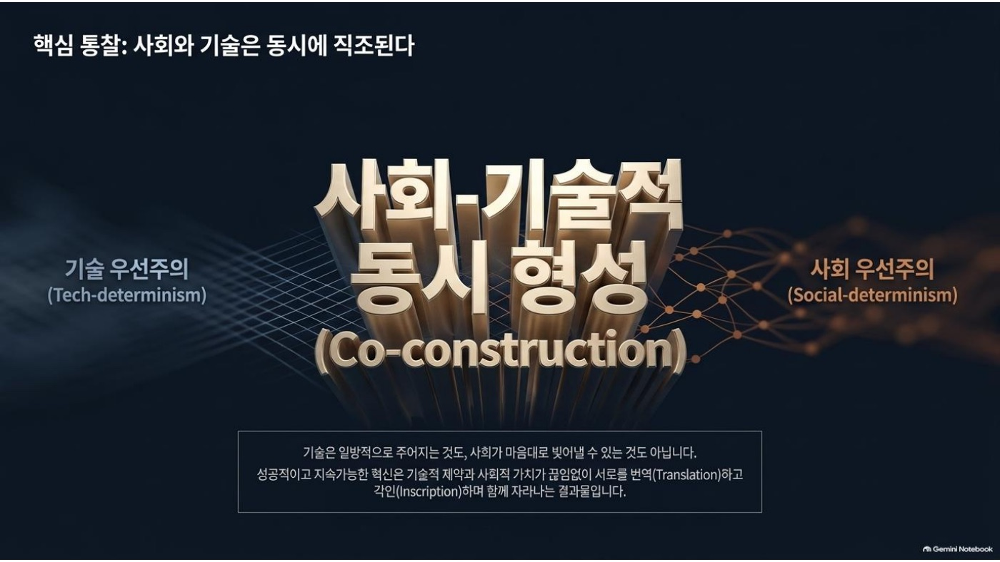
| 입장 | 주장 | 문제 |
|---|---|---|
| 기술결정론 | 기술이 사회를 바꾼다 | 인간의 선택 여지를 지운다. GPT·TEP 논의가 빠지기 쉬운 함정 |
| 사회결정론 | 사회가 기술을 만든다 | 기술의 물질적 제약(비인간 행위성)을 무시한다 |
| 동시 형성 | 서로를 번역·각인하며 함께 자란다 | — |
★ W01의 문제의식 1과 같은 이야기
- ※ 수업노트도 명시한다: 이 구도는 W01의 문제의식 1(Geels 2004, 인간–제도–과학기술의 상호구성)과 같은 이야기다.
두 주차를 연결하면 이렇다.
| W01/02 (Geels 2004) | W03/09 (TEN·ANT) | |
|---|---|---|
| 축 | 규칙·제도 / 인간·조직 / 사회기술시스템 | 과학적 극 / 기술적 극 / 시장 극 + 비인간 |
| 핵심 주장 | 세 축이 서로를 구성한다 | 기술과 사회가 동시에 형성된다 |
| 강조점 | 구조(어떤 관계들이 있나) | 과정(어떻게 연결되나 — 번역·등록) |
→ ★ 퀴즈 비교형으로 매우 유력하다. "같은 주장의 두 버전"이되 Geels는 구조를, ANT는 과정을 본다고 쓰면 좋다.
"사람들이 이런 식으로 바라보기도 하는구나, 기술에다가 에이전시를 넣어가지고 분석하기도 하는구나. 이게 AI 같은 게 나오면 더욱더 심각해지는 거죠. 그것이 갖는 의미가 더 드러나는 거죠."
P1 37:28
두 이론을 실제로 어떻게 같이 쓰나 💡
- TEP로 묻는다: 지금 어떤 패러다임이고 핵심 요소는 무엇인가? 우리 산업은 그 흐름의 어디에 있나?
- TEN으로 묻는다: 그 흐름을 우리 현장에 들이려면 누구를 설득하고 무엇을 등록시켜야 하나? 어디서 번역이 실패하고 있나?
- 교수의 파도형/동심원형(W03/03)이 사실 이 두 질문을 합친 실무 버전이다. 파도형은 TEP의 언어로, 동심원형은 TEN의 언어로 설명된다.
수업에서 나온 논점
- 이 절은 전반부(거시 속성)의 결론이다. 이후 수업은 후반부(경제현상으로서의 혁신: Smith–Hayek–Potts)로 넘어간다.
- 두 부분의 관계: 전반부가 "혁신은 어떻게 퍼지나(또는 안 퍼지나)"를 봤다면, 후반부는 "혁신은 애초에 어떻게 시작되나"를 묻는다. W03/12의 Phase 0가 그 답이다.
보충 사례
- SCOT(Social Construction of Technology) 💡: Pinch & Bijker의 자전거 연구가 대표적. 초기 자전거의 여러 디자인 중 무엇이 살아남을지는 기술적 우수성이 아니라 관련 사회 집단들의 해석이 정했다는 주장. 💡 ANT가 비인간까지 대칭적으로 다루는 데 비해 SCOT은 사회 집단 쪽에 무게가 실려 "사회결정론에 가깝다"는 비판을 받기도 한다. 동시 형성은 두 극단 사이를 겨냥한다.
- Geels의 다층적 관점(MLP) 💡: 니치(niche) – 레짐(regime) – 경관(landscape)의 세 층위로 전환을 설명하는 틀. 💡 사실상 TEN(니치의 미시 역학)과 TEP(경관의 거시 흐름)를 하나의 모형으로 통합한 것으로 읽을 수 있다. W09 StS 주차에서 본격적으로 다룬다. 이 주차의 "둘 다 봐야 한다"는 결론이 그때 구체적 모형으로 돌아온다.
수업 프레임에서의 위치
- 이 주차 전반부의 결론. TEP(W03/01–02) → TEN(W03/05–08)을 묶는다.
- W01/02 Geels의 상호구성과 같은 주장이며, 수업노트가 직접 그 연결을 적어 두었다.
- W09 StS의 다층적 관점(MLP)으로 발전한다. 이 주차에서 "둘 다 봐야 한다"고 선언한 것을 그때 하나의 모형으로 푼다.
- W01/10의 "구조의 차이 / 구조의 변화" 분류로 보면, TEP는 변화의 거시 패턴을 TEN은 변화의 미시 기작을 본다.
예상 퀴즈 포인트
-
1
비교형
★★ TEP와 TEN을 기원·포커스·행위자·맹점의 네 차원으로 비교하라.
-
2
서술형
★ 사회–기술적 동시 형성(co-construction)이란 무엇이며, 기술결정론·사회결정론과 어떻게 다른가?
-
3
비교형
★ 비교형: Geels(2004)의 인간–제도–과학기술 상호구성과 ANT의 동시 형성은 어떤 관계인가? 두 틀의 강조점 차이를 설명하라.
Adam Smith — 분업과 생산성
Adam Smith — Division of Labour and Productivity — 경제현상으로서의 혁신 I
출처
리딩
- Adam Smith (1776) The Wealth of Nations, Book I Ch.1–3
수업노트
- 수업노트/W03_강의기록_260919.md §5-1 [P1 38:17–41:48]
- 수업노트/W03_강의기록_260919.md §5-2, §5-3 [P1 ~47:45]
한 줄 정의
경제는 어떻게 성장하는가? Smith의 답은 분업(division of labour)이다. 일을 나누면 생산성이 오르고, 생산성이 오르면 싸게 팔 수 있고, 싸지면 시장이 커지고, 시장이 커지면 더 나눌 수 있다. 이 선순환이 성장이다. 그런데 분업 안에는 이미 DUI와 STI가 다 들어 있다 — 하다 보면 요령이 생기고(DUI), 관찰하는 사색가가 이질적 지식을 결합한다(STI).
쉽게 말하면
식당 주방을 생각해 보자. 혼자 다 하면 느리다. 썰는 사람, 굽는 사람, 담는 사람으로 나누면 훨씬 빨라진다. 빨라지니 값을 내릴 수 있고, 값이 싸지니 손님이 늘고, 손님이 느니 사람을 더 나눌 수 있다.
그런데 여기서 두 가지 일이 더 일어난다. 썰기만 하는 사람은 더 빠른 칼질 요령을 발견한다(DUI). 그리고 주방 전체를 지켜보는 사람이 "저쪽 설비를 이쪽에 쓰면 되겠다"고 생각한다(STI). 분업은 생산성만 올리는 게 아니라 혁신을 낳는다.
핵심 내용
📄 슬라이드 (W03 p25, p28–29)
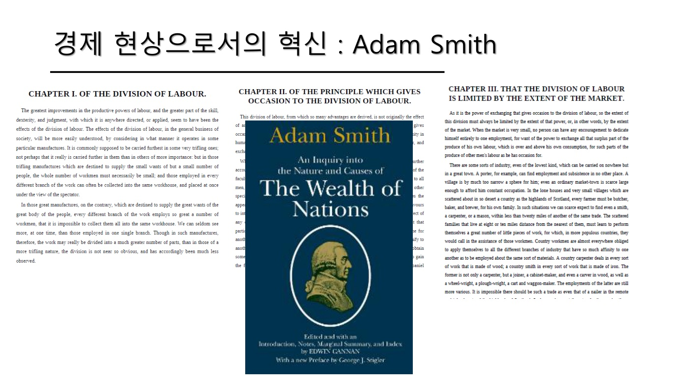
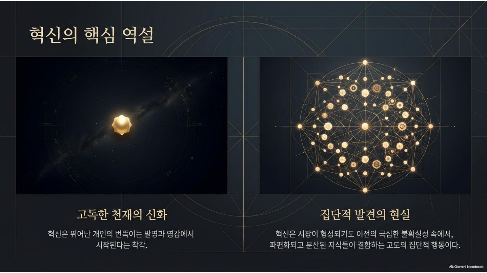
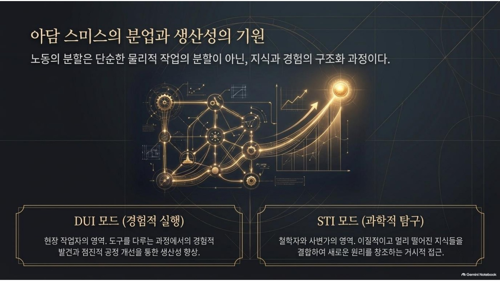
🗣 세 경제학자 — 이 후반부의 지도
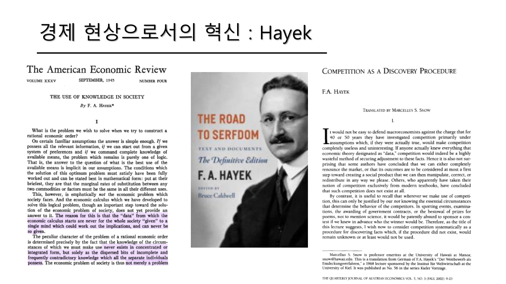
| 학자 | 시기 | 🗣 설명 |
|---|---|---|
| Adam Smith | 1776 국부론 | 스코틀랜드 글래스고의 철학자. 경제학의 원조라 불리지만 1·2·3장을 보면 이미 기술·혁신·생산성 이야기가 나온다 |
| Hayek | Smith보다 150~200년 뒤 | 노예의 길의 시장주의자. 나치 시대 배경 속에서 개인의 자유로운 거래·선택·소통이 핵심이라 주장. 혁신을 직접 다루진 않았지만 「사회 속 지식의 이용」과 「발견 절차로서의 경쟁」이 혁신 논의로 이어진다 |
| Jason Potts | 2019 The Innovation Commons | 스스로를 진화경제학자라 칭하는 오스트리아학파 계열. 완전히 독창적이라기보다 Hayek를 일반화해 Ostrom과 연결시킨 것이 중요한 기여 |
★ 이 세 사람이 W03/15의 Phase 2 → Phase 1 → Phase 0에 각각 대응한다. 즉 교수는 경제학사를 거꾸로 거슬러 올라가며 혁신의 더 앞 단계를 찾아간다.
🗣 두 개의 핵심 발언 ★★
"빌 게이츠니 스티브 잡스니 하면서 뛰어난 사람이 해내는 솔로 액트를 보통 얘기하죠. 근데 그렇지 않다. 그런 사람이 있긴 있으나, 처음 시작은 여럿이 모여서 하는 거예요."
P1 41:48
"혁신이라는 게 뭐가 여기 있어서 그걸 막 파가지고 발견하는 게 아니고, 여럿이서 같이 움직이면서 찾아내는 과정이라는 거. 디스커버리의 과정이지 투자의 과정이 아니야."
P1 42:36
두 번째 발언이 이 후반부 전체의 테제다. "발견의 과정이지 투자의 과정이 아니다" → W03/13의 시장 실패 vs 발견 실패로 정식화된다. 💡 첫 번째 발언은 W01/01의 "혁신은 solo act인가"와 정확히 같은 질문이다. W01에서 던진 질문에 W03에서 경제학 계보로 답하는 구조.
분업 → 생산성 → 시장 확대의 선순환 📄
분업 → 생산성 향상 → 더 싸게 판매 → 시장 확대 → 다시 더 싸게
★ 분업 안에 DUI와 STI가 다 들어 있다
| 🗣 Smith가 이미 말한 것 | W02-1 대응 | |
|---|---|---|
| DUI | 하다 보면 요령이 생긴다. 증기기관의 밸브에 끈을 묶어 자동화한 소년의 일화 | W02-1/03 DUI mode |
| STI | 사색가·철학자가 등장해 직접 생산하지 않고 모든 것을 관찰하며 서로 멀리 떨어진 이질적 지식을 결합한다 | W02-1/03 STI mode |
1776년 책에 이미 두 학습 모드가 다 들어 있다는 것이 교수가 강조하는 지점. Jensen et al.(2007)이 발견한 게 아니라 다시 발견한 것에 가깝다.
교환 성향과 공동 자산 📄
- 교환 성향(propensity to exchange): 내가 전문적으로 만들면 남과 교환하면 된다.
- 그래서 각자의 재능이 사회 전체의 공동 자산(common stock)으로 집적된다. 이것이 시장이 만들어지는 원리.
- 🗣 Smith의 유명한 주장: 영국에서 제일 가난한 사람이 아프리카의 추장보다 더 많은 부를 누린다.
common stock이라는 표현에 주목할 것. 뒤에 나올 commons(공유지)와 어원이 통하고, 실제로 Potts의 혁신 공유지는 "재능이 모여 공동 자산이 된다"는 Smith의 직관을 Phase 0로 밀어 올린 것으로 읽을 수 있다.
추격형 R&D에서의 정당성과 한계 ★ (p30)
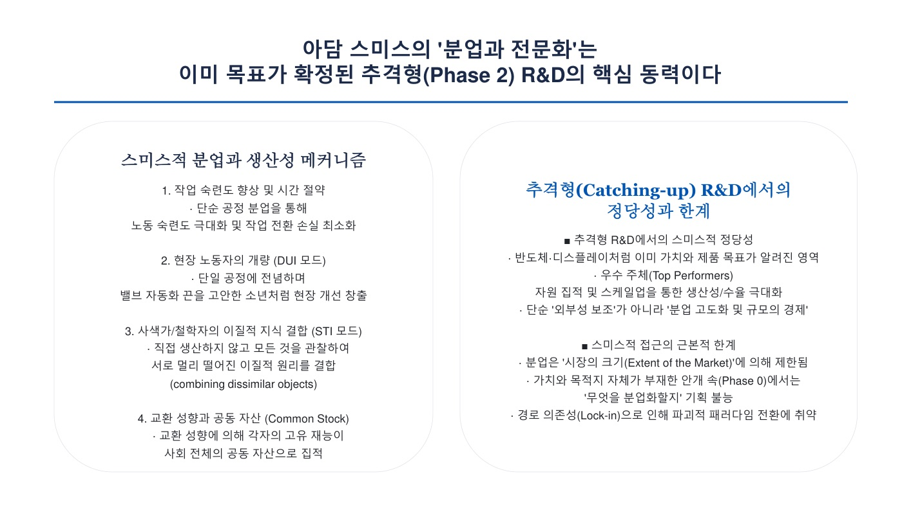
📄 정당성
- 반도체·디스플레이처럼 가치와 제품 목표가 이미 알려진 영역에서는 우수 주체에 자원을 집적하고 스케일업해 수율·생산성을 극대화하는 것이 맞다.
- 단순한 외부성 보조가 아니라 분업 고도화와 규모의 경제다. 20세기 한국이 한 일.
📄🗣 한계
- 분업은 시장의 크기(extent of the market)에 의해 제한된다. 한국은 냉전 맥락에서 미국이 시장을 잡아 줬고, 중국은 2001년 WTO 가입으로 세계 시장에 접근했다. 지금은 그 시장이 막히는 국면.
- 가치와 목적지 자체가 없는 안개 속(Phase 0)에서는 무엇을 분업화할지 기획 자체가 불가능하다.
- 경로의존성(lock-in)으로 파괴적 패러다임 전환에 취약하다.
- 🗣 Smith의 세계에는 아직 경쟁 개념이 없었다. 가격은 이미 세팅된 것으로 보았다. → 그래서 Hayek가 필요하다(W03/11).
1번 한계는 W02-1/08의 🗣 "시장이 없으면 못 한다"와 같은 말이다. 두 주차가 같은 논점에서 만난다.
수업에서 나온 논점
- 이 절은 W02-1/10–11(한국의 수요–공급–연계 정책)의 이론적 뒷받침이다. 한국의 추격 전략이 왜 정당했고 왜 한계에 왔는지를 Smith로 설명한다.
- W03/15 Phase 2가 곧 이 Smith적 스케일업이다. 🗣 "우리는 계속 여기서만 해 왔다."
보충 사례
- 핀 공장(pin factory): 국부론 1장의 유명한 예시. 혼자 만들면 하루 20개도 못 만들지만, 18개 공정으로 나누면 10명이 48,000개를 만든다. 💡 Smith가 분업의 효과로 꼽은 세 가지는 숙련 향상, 전환 시간 절약, 기계 발명인데, 세 번째가 곧 혁신이다.
- "시장의 크기가 분업을 제한한다" 💡: 국부론 3장의 명제. 작은 마을에는 전문 대장장이가 없고 잡화상만 있다. 💡 이 명제의 현대판이 "내수 시장이 작은 나라는 수출로 시장을 키워야 분업을 고도화할 수 있다"이고, 그것이 한국의 수출주도 전략의 논리였다.
- Smith를 "시장만능주의자"로 읽으면 오독이다. 그는 도덕감정론을 먼저 쓴 도덕철학자였고, 분업의 폐해(단순 반복 노동이 사람을 우둔하게 만든다)도 명시적으로 경고했다. 🗣 "철학자"라는 소개가 그 점을 가리킨다.
수업 프레임에서의 위치
- 후반부 3부작(Smith → Hayek → Potts)의 첫 번째이자, 역설적으로 시간상 가장 뒤 단계(Phase 2)를 설명한다.
- W02-1/08–11의 한국 발전 서사에 경제학적 근거를 댄다.
- 한계 세 가지가 그대로 Hayek(가격을 모를 때)와 Potts(목적지조차 모를 때)의 출발점이 된다.
예상 퀴즈 포인트
-
1
서술형
★ Smith의 분업–생산성–시장 확대 선순환을 설명하라.
-
2
서술형
★ "분업 안에 DUI와 STI가 다 들어 있다"는 말을 Smith의 서술(소년의 일화, 사색가)로 설명하라.
-
3
비교형
비교형: "시장의 크기가 분업을 제한한다"는 Smith의 명제와 W02-1의 "시장이 없으면 못 한다"를 연결해 한국 사례로 설명하라.
★ Hayek — 분산된 지식과 발견 절차로서의 경쟁
Dispersed Knowledge; Competition as a Discovery Procedure — 경제현상으로서의 혁신 II
출처
리딩
- Hayek (1945) The Use of Knowledge in Society
- Hayek (1968) Competition as a Discovery Procedure
수업노트
- 수업노트/W03_강의기록_260919.md §6 [P1 47:45–55:39]
- 수업노트/W03_강의기록_260919.md §9 Q6, Q7
한 줄 정의
Smith는 가격이 이미 정해져 있다고 보았다. Hayek는 묻는다. 그 가격은 누가 아는가? 아무도 모른다. 지식은 모든 사람에게 흩어져 있고(분산된 지식), 중앙에서 모을 수 없다. 그래서 경쟁은 승자를 가리는 절차가 아니라 아무도 모르는 것을 찾아내는 절차다. 🗣 "누가 이길지 알기에 경쟁하는 것이 아니라 모르기 때문에 경쟁하는 것이다."
쉽게 말하면
맛집을 찾는 두 가지 방법이 있다.
- 중앙계획식: 미식 전문가 위원회가 심사해서 "이 집이 최고"라고 지정한다. 문제는 위원들이 그 동네에 안 살고, 어제 새로 생긴 집은 모른다는 것이다.
- 하이에크식: 사람들이 직접 가 보고, 서로 이야기하고, 맛없으면 안 간다. 그 과정에서 아무도 미리 몰랐던 맛집이 드러난다.
핵심은 위원회가 게을러서가 아니라 원리적으로 알 수 없다는 것이다. 지금 저 골목에서 무슨 일이 벌어지는지는 거기 있는 사람만 안다.
핵심 내용
📄 슬라이드 (W03 p31–32)
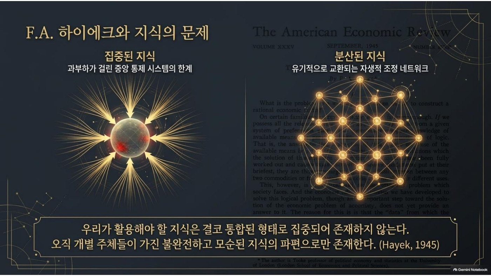
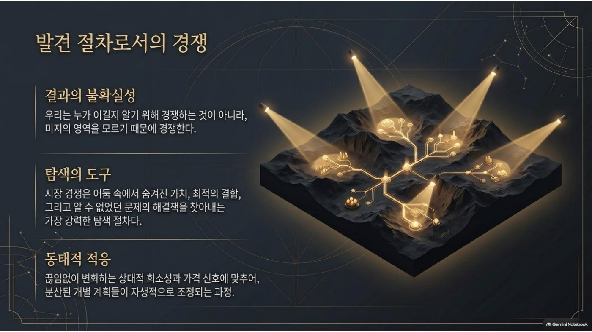
문제는 분업이 아니라 지식이다
- 🗣 문제의 본질은 분업이나 전문화가 아니라 지식을 모으는 것이다. 왜냐하면 가격을 모르기 때문이다.
- 🗣 실제 시장은 가격이 세팅되어 있지 않다. 가격은 주고받으면서 형성된다. 내가 원하는 가격이 있어도 경쟁이 붙으면 다른 가격이 될 수 있다.
- 🗣 따라서 혁신의 핵심은 제대로 된 가격, 제대로 된 방식을 찾아가는 과정 = 발견(discovery)이며, 그러려면 시장의 모든 플레이어와 소통해야 한다.
"뭐가 딱 있어서 그거를 파내는 그런 디스커버리가 아니고, 소통을 해라. 왔다 갔다 하면서 주고받으면서. 그러니까 R&D 투자도 하고 그런 게 아니고 서로 소통하게끔 하는 거, 그리고 경쟁하게끔 하는 거. 그때 지식을 활용할 수가 있다."
P1 50:18
분산된 지식(dispersed knowledge) ★
- 🗣 어느 한 사람이나 조직의 머릿속에 다 들어 있을 수 없다.
- 🗣 당시 경제학자들이 거시 통계로 세상을 다 이해한다고 믿은 것에 대한 비판 — 통계에 안 잡히는 것이 엄청나게 많다. 암묵지도 있고, 지금 이 순간 저쪽에서 어떻게 움직이는지는 가 봐야 안다.
W02-1/01의 암묵지와 정확히 같은 지점에서 만난다. Polanyi가 "말할 수 있는 것보다 많이 안다"고 했다면, Hayek는 "그래서 중앙에서 모을 수 없다"는 경제적·정치적 함의를 끌어낸다.
발견 절차로서의 경쟁 ★★
"발견 절차로서의 경쟁. 누가 이길지 알기에 경쟁하는 것이 아니라 모르기 때문에 경쟁하는 것이다."
P1 52:39
이 한 문장이 Hayek의 핵심이다. 경쟁을 선별 장치가 아니라 탐색 장치로 본다. 결과를 미리 알면 경쟁할 이유가 없다. 모르기 때문에 여러 시도를 해 보는 것이고, 그 과정 자체가 지식을 만든다.
→ 이 논리가 W03/17의 "국가는 picking winners를 그만두라"로 직결된다. 누가 이길지 미리 알 수 있다면 경쟁은 낭비지만, 알 수 없으므로 지정은 오류다.
중앙계획가 모델 vs 하이에크적 시장 ★★ (p33, 퀴즈 1순위)
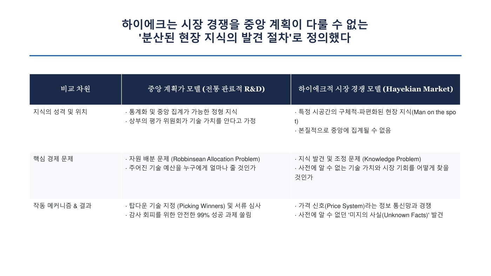
| 중앙 계획가 모델 (전통 관료적 R&D) | 하이에크적 시장 경쟁 | |
|---|---|---|
| 지식의 성격·위치 | 통계화·중앙 집계가 가능한 정형 지식. 상부 평가위원회가 기술 가치를 안다고 가정 | 특정 시공간의 구체적·파편화된 현장 지식(man on the spot). 본질적으로 중앙 집계 불가 |
| 핵심 문제 | 자원 배분 문제 — 주어진 예산을 누구에게 얼마나 줄 것인가 | 지식 발견·조정 문제 — 사전에 알 수 없는 기술 가치와 시장 기회를 어떻게 찾을 것인가 |
| 작동과 결과 | 탑다운 기술 지정(picking winners), 서류 심사, 감사 회피를 위한 안전한 99% 성공 과제 쏠림 | 가격 신호라는 정보 통신망과 경쟁, 사전에 알 수 없던 미지의 사실 발견 |
"지금의 R&D 시스템이 거의 그렇게 돼 있죠. (…) 문제를 생산 비용이 너무 많이 들어가니까 똘똘한 사람한테 밀어주면 뭐가 나올 것이다라는 게 기본적인 R&D 컨셉이에요. 그게 아니고 여럿이 같이 풀어내게끔, 소통하게끔 만들어주는 게 R&D의 컨셉이라는 게 하이에크의 모델입니다."
P1 53:53
- 🗣 기술만 개발하는 거라면 전문가에게 맡기면 된다. 그러나 그 기술이 정말 시장 가치가 있는지는 시장 경쟁을 시켜 봐야 안다.
"감사 회피를 위한 안전한 99% 성공 과제 쏠림"이 가장 뼈아픈 지적이다. 중앙계획 모델에서는 실패가 책임 문제가 되므로, 연구자들이 될 게 뻔한 과제만 신청한다. 그 결과 성공률은 높은데 아무것도 새롭지 않다. → W03/17, 그리고 W02-1의 Korea Paradox와 연결.
🗣 "잘하는 애한테 몰아주기"의 재등장 💡
W01/05에서 🗣 교수는 개발국가 멘탈리티를 "잘하는 애한테 몰아주면 뭔가 나온다"로 요약했고, 추격에는 먹혔지만 프론티어에서는 안 먹힌다고 했다. Hayek의 중앙계획가 비판이 그 진단의 이론적 근거다. 두 주차가 같은 결론에서 만난다.
수업에서 나온 논점
- ★ Q6 (폐쇄형 vs 개방형 — 어느 쪽이 장기 역량을 높이나): 🗣 장기적으로 보면 개방이 낫다.
"사회가 움직이는 방식은 소통하면서 경쟁할 때 뭐가 만들어진다는 얘기예요. 기본적인 철학은. 근데 아무것도 모를 때는 경쟁도 안 되는 거죠. 같이 모여서 얘기하는 방식이 있다는 게 Potts가 얘기한 거고."
P2 23:39
🗣 생태계 수준에서도 한 진영은 폐쇄형, 다른 진영은 개방형일 때 개방형이 이긴다는 논의가 있다. 다양성이 높기 때문.
🗣 Schumpeter 비판: R&D라는 활동이 필요하다는 주장은 맞지만, R&D를 하다 보면 덩치가 크고 조직화된 대기업이 잘할 수밖에 없다. 그러면 한쪽으로 몰린다는 뜻이 되고, Schumpeter는 그렇게 가다가 사회주의로 빠져 버렸다.
🗣 embedded autonomy 보충: "굉장히 잘하고 착하고 딴짓도 안 하고, 그럼에도 불구하고 쏠리면 한계가 있을 수 있다. 캐치업할 때는 그게 맞지만, 지금은 오히려 다양성을 더 확대하는 게 필요하다." →
수업노트/W03 §9 Q6★ Q7 (리버스 이노베이션): 🗣 Hayek는 혁신을 직접 말하지 않았지만, "그때 그 현장(spot)의 상황은 그 사람만 알지 나는 모른다, 알려면 소통할 수밖에 없다"는 명제에 정확히 맞는 사례가 외국계 지사의 로컬 캠페인이 본사로 역류하는 현상이다.
- 🗣 GE의 인도 경량 심전도 기기가 미국으로 역수출된 것이 리버스 이노베이션의 전형. 로컬 조건에 맞춘 혁신이 오히려 주류 시장으로 들어가는 패턴.
- 🗣 "이런 사례로 정리하면 연구가 될 수 있다." → ★ Term paper 후보. →
수업노트/W03 §9 Q7
보충 사례
- Hayek (1945) "The Use of Knowledge in Society": 💡 핵심 예시는 주석(tin) 가격이다. 어딘가에서 주석이 부족해지면 가격이 오르고, 전 세계 사용자는 왜 올랐는지 몰라도 절약하거나 대체재를 찾는다. 가격이 방대한 정보를 한 숫자로 압축해 전달한다는 것. 💡 다만 Potts(W03/12)는 그 가격조차 없을 때를 묻는다.
- 사회주의 계산 논쟁 💡: 1920~40년대 Mises·Hayek와 Lange·Lerner 사이의 논쟁. 중앙계획으로 합리적 자원 배분이 가능한지가 쟁점이었다. Hayek의 기여는 "계산 능력의 문제가 아니라 지식의 문제"라고 재정의한 것.
- Hayek를 쓸 때의 주의: Hayek는 강한 시장주의자이고 정치적으로 논쟁적인 인물이다. 이 수업에서 교수가 끌어오는 것은 그의 정치적 결론이 아니라 지식론이다. 🗣이 강조하는 것도 "시장이 최고다"가 아니라 "소통하고 경쟁하게 만들라"는 R&D 설계 원리다. 답안에서도 그 범위를 지키는 편이 안전하다.
수업 프레임에서의 위치
- 후반부 3부작의 두 번째, W03/15의 Phase 1에 대응.
- Smith의 한계(가격이 이미 정해져 있다고 가정)를 메운다.
- Hayek의 한계(가격조차 없을 때는?)가 Potts(W03/12)의 출발점이 된다.
- W03/13의 발견 실패 계보(Knight–Hayek–Ostrom)의 중심.
- W02-1/07의 조직화된 시장(순수 시장은 가격 신호만 전달한다)과 비교하면 흥미롭다. Lundvall은 "가격만으로는 부족하다"고 했고 Hayek는 "가격이 많은 것을 전달한다"고 했다. ★ 좋은 비교 소재.
예상 퀴즈 포인트
-
1
서술형
★★ "발견 절차로서의 경쟁"이란 무엇인가? "모르기 때문에 경쟁한다"는 명제를 설명하라.
-
2
비교형
★★ 중앙계획가 모델과 하이에크적 시장을 지식의 성격·핵심 문제·작동 방식의 세 차원으로 비교하라.
-
3
비교형
비교형: Hayek의 가격 신호와 Lundvall의 조직화된 시장은 시장을 어떻게 다르게 보는가?
-
4
서술형
응용: 리버스 이노베이션을 Hayek의 man on the spot 개념으로 설명하라.
Ostrom의 공유지와 Potts의 혁신 공유지 (Phase 0)
Commons (Ostrom); Innovation Commons (Potts) — Phase 0 — Phase 0 — 경제현상으로서의 혁신 III
출처
리딩
- Potts (2019) Innovation Commons ★Core Reading
- Ostrom (1990) Governing the Commons
- Hess & Ostrom (2007) Understanding Knowledge as a Commons
수업노트
- 수업노트/W03_강의기록_260919.md §7-1 ~ §7-3 [P1 55:39–1:05:00]
- 수업노트/W03_강의기록_260919.md §7-6, §8-1, §8-2, §8-3
- 수업노트/W03_강의기록_260919.md §9 Q2, Q4
한 줄 정의
Hayek는 가격을 찾기 위해 소통하라고 했다. Potts는 묻는다. 그 가격조차 매길 수 없을 때는? 경쟁 자체가 불가능하다. 🗣 "그때는 모여서 얘기하는 거예요." 기업도 시장도 생기기 전, 극심한 불확실성 속에서 사람들이 정보를 모아 기회의 윤곽을 그리는 단계가 혁신 공유지이고, 이것이 Phase 0다.
쉽게 말하면
새로운 땅에 도착했다고 하자.
| Phase 2 (Smith) | 지도가 다 있다. 도로를 어디에 깔지 나눠서 효율적으로 공사한다. |
|---|---|
| Phase 1 (Hayek) | 지도는 없지만 어느 쪽에 금이 있다는 소문은 있다. 여러 팀이 경쟁하며 파 본다. |
| Phase 0 (Potts) | 금이 있는지조차 모른다. 이때는 경쟁할 것도 없다. 일단 다들 가진 정보를 꺼내 놓고 지도부터 같이 그린다. |
🗣 교수의 표현: "아무것도 모를 때. 뭐가 있긴 있을 것 같은데 아무것도 몰라. AI가 나왔어, 그거 하면 뭐가 될 것 같긴 해."
핵심 내용
📄 슬라이드 (W03 p34–35, p37)
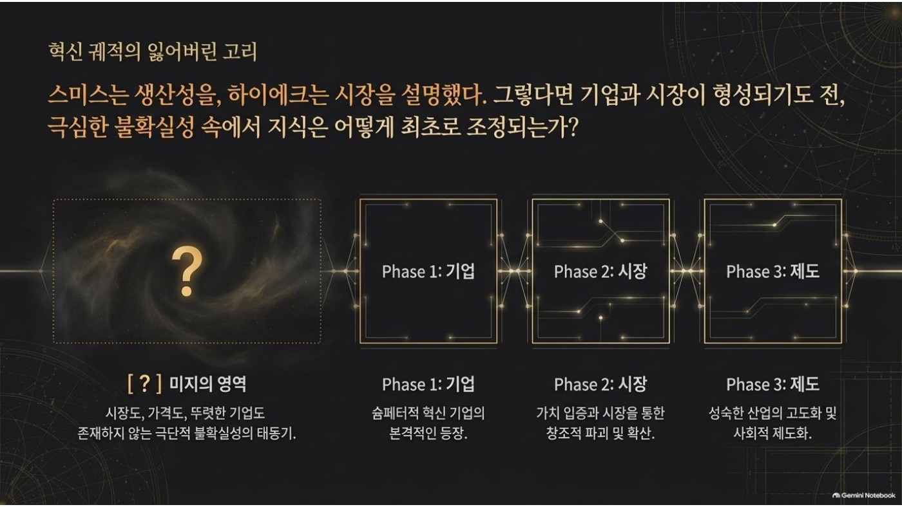
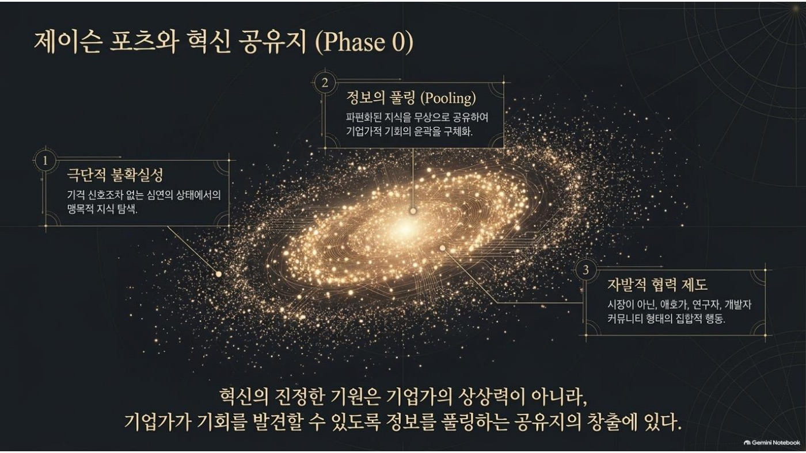
출발 질문
- 🗣 Smith는 생산성을, Hayek는 시장을 설명했다. 그렇다면 기업과 시장이 형성되기 이전, 극심한 불확실성 속에서 지식은 어떻게 조정되는가?
"하이에크는 가격을 찾기 위해 소통해야 한다는 거였잖아요. Potts는 그 가격조차 매길 수 없을 때 어떻게 하냐. 경쟁할 수는 없고, 그때는 모여서 얘기하는 거예요. (…) 처음 시작이 여기. 처음 시작은 모여서 협력하는 거야."
P1 1:00:57
🗣 오픈소스는 그냥 벌어진 게 아니다
- 홈브루 컴퓨터 클럽처럼 칩을 가져와 "이걸로 뭐가 되지?" 하며 사람들이 모여서 해 본 것.
- 그때 생기는 문제가 무임승차(free rider)와 기회주의. 눈팅만 하다 기회가 보이면 튀는 사람.
- → 그래서 규칙(governance rule)을 만든다. ★
이 순서가 중요하다. 공유 → 무임승차 문제 발생 → 거버넌스 규칙. 규칙이 먼저 있어서 공유가 되는 게 아니라, 공유하려다 보니 규칙이 필요해진다.
Ostrom과 공유지 🗣
- 공유지의 비극(Tragedy of the Commons): 주인 없는 목초지에서 소를 마음대로 방목하게 했더니 목초지가 망가졌다.
- Elinor Ostrom(인디애나대, 노벨 경제학상): 꼭 그렇지는 않더라. 사람들이 규칙을 정해 관리하더라.
- 🗣 한국의 예: 두레·향약처럼 마을의 관개 수로를 공동 관리하는 방식. 저수지도 "작년엔 저 집이 먼저 썼으니 올해는 이 집" 식으로 룰을 정한다.
- 🗣 단, 이런 규칙이 세지면 대단히 배타적이 되기도 한다. ★
- 🗣 Ostrom과 제자 Charlotte Hess가 자연자원을 넘어 지식 공유지(knowledge commons)로 확장했다. 오픈소스, 데이터 저장소 같은 것들.
- 🗣 Potts는 여기에 Hayek를 결합해 혁신 공유지(Innovation Commons)라는 이름을 붙였다.
"배타적이 되기도 한다"는 단서를 기억할 것. 공유지는 안에서는 협력이지만 밖에서는 울타리다. W02-2에서 다루려던 enclosure 문제와 닿는다.
Phase 0의 세 요소 📄 ★
| 요소 | 📄 내용 |
|---|---|
| 극단적 불확실성 | 가격 신호조차 없는 상태에서의 맹목적 지식 탐색 |
| 정보의 풀링(pooling) | 파편화된 지식을 무상으로 공유해 기업가적 기회의 윤곽을 구체화 |
| 자발적 협력 제도 | 시장이 아니라 애호가·연구자·개발자 커뮤니티 형태의 집합적 행동 |
→ W01/01과 W03/10에서 반복된 "혁신은 solo act가 아니다"의 가장 강한 버전. 영웅 서사를 제도 서사로 바꾼다.
🗣 거버넌스는 국지적이어야 한다 ★
- 기회주의를 막으려면 모니터링하고 제재해야 하는데, 그러려면 현장 가까이 있어야 한다.
- 🗣 예: 의료 데이터로 커먼즈를 만든다면 전국 단위로는 안 된다. 부산시는 부산시 단위로 해야 온·오프라인에서 서로 모니터링이 된다.
Ostrom의 설계 원칙과 통한다. 💡 그가 정리한 8원칙에는 명확한 경계, 지역 조건에 맞는 규칙, 집합적 선택 참여, 감시, 단계적 제재, 분쟁 해결 장치가 들어간다. 핵심은 규칙을 쓰는 사람들이 직접 만든다는 것.
현실로 나타난 Phase 0 📄 (p41)
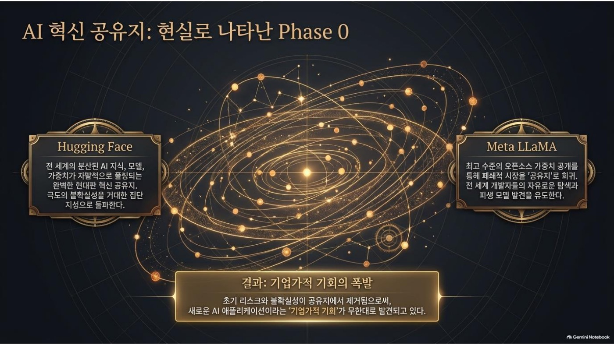
- 🗣 Hugging Face: 2016년경 챗봇 솔루션 회사로 시작했는데, 구글의 Transformer 라이브러리를 올려 누구나 쓸 수 있게 해 주고 컴퓨팅도 제공했더니 엔지니어들이 몰려와 AI 모델을 연습하는 장소가 되어 버렸다. 이후 거액의 투자가 이어졌고, NVIDIA도 지분을 담았다 — 자기네 GPU를 표준으로 삼으려는 목적으로 보인다.
- 🗣 GitHub도 같은 성격의 오픈 플랫폼이었고, Meta의 LLaMA는 오픈소스 가중치 공개로 폐쇄 시장을 공유지로 되돌렸다.
공유지에서 시장으로 — 자발적 와해 📄 (p42)
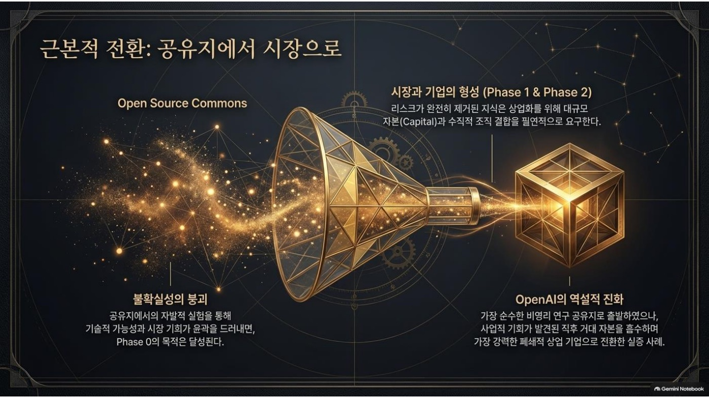
"와해"가 실패가 아니라 성공의 신호라는 점이 중요하다. 공유지는 영원히 유지할 대상이 아니라 다음 단계로 넘어가기 위한 장치다. 다만 OpenAI 사례는 그 전환이 공정한가라는 질문을 남긴다.
🗣 교수의 제안: 부산 해양 피지컬 AI 플랫폼
- 교수가 부산 쪽에 해양(maritime) 피지컬 AI 글로벌 플랫폼을 만들자고 제안했으나 아직 진전이 없다.
- 🗣 이유: 자율주행 자동차는 현대·NVIDIA 등이 차를 깔아 데이터를 모으지만, 배는 그 정도 데이터를 혼자 모을 수 없다. 전 세계를 봐야 풍부한 데이터가 되므로 혼자서는 분명히 못 한다.
"그렇다면 이런 커먼스를 만들어서 하는 게 맞지 않겠나. 근데 절대로 자기 데이터를 안 주려고 그러겠지. 그게 숙제야. 그걸 어떻게 공유하는 방식으로 해낼 수 있을 것이냐."
P1 1:15:08
→ ★ Term paper 후보 (수업노트에도 표시).
수업에서 나온 논점
- ★ Q2 (커먼스를 '제대로' 설계한다는 것의 기준은?) — 자본주의에서는 지식 사유화가 경쟁력인데 중간 지점을 어떻게 찾나.
"Potts의 이노베이션 커먼스라는 개념은 좋은데, 현실에서는 과연 그럴까, 과연 이게 될까 이런 생각이 들거든요. 말씀하신 대로 다 사유하려고 그러지. (…) 협력해서 얻을 이득이 분명히 있는데 거기까지 안 가고 '내가 알아서 할까'를 고민하고 있는 거죠."
P1 1:59:20
🗣 기술적 우회로: 연합학습(federated learning) — 데이터를 바깥으로 내보내지 않고 결과값만 보내는 방식.
🗣 실제 사례: 조선 3사(삼성중공업·한화오션·HD현대)가 AI 경진대회를 열어 기본 데이터셋을 제공하고 훈련하게 한다. 확대하면 자기 돈 들이는 것보다 훨씬 싸게 고급 모델을 개발할 수도 있다.
🗣 한계 인정: 자본주의 사회이므로 언제든 벗어나 혼자 하려는 것을 막을 수 없다. 문제는 지금은 시작조차 못 하고 있다는 것. →
수업노트/W03 §9 Q2★ Q4 (기업 안에서도 지식 공유지를 시도할 수 있을까) — 사내 AI 개방 후 "업무에 대한 것만 하라"는 공지로 실험이 위축된 사례.
- 🗣 이런 것을 스컹크 웍스(skunk works)라고도 부른다. 창의성 관점에서는 오픈해 놓는 게 낫다.
- 🗣 "이 사례 자체가 동심원형 혁신의 Phase 0"이며, 불확실성을 디폴트로 인정해 주면 사람들이 집에서 따로 하지 않고 편안하게 혁신할 수 있었을 것.
- 🗣 실패 비용의 회계 처리 질문에 대해: 예전에는 "여기 뭐가 있으니 찾아내라"는 R&D라 성과를 물을 수 있었지만, 지금은 탐색적(exploratory)이라 카운팅이 안 된다. '발견 비용'이라는 개념을 더 많이 이야기해 주면 패러다임 전환에 도움이 된다. → W03/14. →
수업노트/W03 §9 Q4
보충 사례
- Ostrom (1990) Governing the Commons: 스위스 목초지, 일본 입회지, 스페인 관개 조합, 필리핀 수리 시설 등 수백 년간 유지된 공유자원 관리 사례를 모아 "비극은 필연이 아니다"를 논증했다. 💡 2009년 여성 최초 노벨 경제학상.
- 홈브루 컴퓨터 클럽 💡: 1975~1986년 실리콘밸리의 아마추어 컴퓨터 동호회. 워즈니악이 애플 I 설계를 무료로 공유하던 자리였다. 💡 Phase 0의 교과서적 사례이며, 거기서 애플이 나왔다는 사실이 "공유지에서 시장으로"의 전형이다.
- 왜 데이터는 더 어려운가: 목초지는 내가 쓰면 남이 못 쓰지만(경합성), 데이터는 복제해도 줄지 않는다. 그래서 공유가 쉬울 것 같지만 오히려 더 어렵다. 한 번 내주면 통제권을 완전히 잃기 때문이다. 🗣 "절대로 자기 데이터를 안 주려고 그러겠지"가 그 구조다.
수업 프레임에서의 위치
- 후반부 3부작의 세 번째이자 이 주차의 종착점. W03/15 Phase 0.
- W03/11 Hayek의 한계(가격조차 없을 때)를 메운다.
- W03/13(발견 실패)과 W03/17(제도 건축가)의 실천 프로그램.
- W03/04에서 제기된 데이터 공유 문제의 해법으로 제시된다.
- W01/11 Innovation Ecosystem의 🗣 "규칙을 만드는 커뮤니티를 같이 꾸려 나가는 작업"과 같은 자리. 커먼스도 모두가 동의하고 정렬되어야 한다고 W01에서 이미 언급됐다.
예상 퀴즈 포인트
-
1
서술형
★★ 혁신 공유지(Innovation Commons)란 무엇이며, Hayek의 논의와 어떻게 이어지는가? (가격조차 없을 때)
-
2
서술형
★ Phase 0의 세 요소를 쓰고 설명하라.
-
3
서술형
★ 공유지의 비극에 대한 Ostrom의 반박과, 그것이 혁신 논의로 확장된 경로를 서술하라.
-
4
서술형
★ 응용: 의료 데이터나 해양 데이터 커먼스를 설계한다면 어떤 거버넌스 규칙이 필요한가? 왜 국지적이어야 하는가?
-
5
서술형
응용: 기업 내부에서 지식 공유지를 만들려면 무엇이 필요한가? (Q4 사례 활용)
★ 시장 실패 vs 발견 실패
Market Failure vs Discovery Failure — 이 주차에서 가장 중요한 대비
출처
리딩
- Potts (2019) Innovation Commons ★
- Arrow (1962)
- Nelson (1959)
- Hayek (1945)
- Ostrom (1990)
수업노트
- 수업노트/W03_강의기록_260919.md §7-4 [P1 1:05:16]
한 줄 정의
왜 혁신이 부족한가? 기존 답은 시장 실패였다. 투자해 봐야 지식이 옆으로 새니까(spillover) 민간이 투자를 안 한다 → 정부가 생산 비용을 대 준다. Potts의 답은 다르다. 문제는 돈이 아니라 뭘 해야 할지 모른다는 것, 즉 발견 실패다 → 정부는 발견 비용을 줄이도록 커먼즈 구성과 운영을 지원해야 한다.
쉽게 말하면
보물찾기에 비유하면,
- 시장 실패 관점: 삽이 비싸서 아무도 안 판다. 정부가 삽을 사 준다.
- 발견 실패 관점: 삽은 있는데 어디를 파야 할지 모른다. 정부가 삽을 더 줘도 엉뚱한 데를 팔 뿐이다. 필요한 것은 사람들이 가진 단서를 모아 지도를 그리게 돕는 일이다.
🗣 교수의 요약: "시장을 만들어주든지, 아니면 협력할 수 있는 시스템을 만들어 주든지."
핵심 내용
📄 슬라이드 (W03 p36, p38–39)
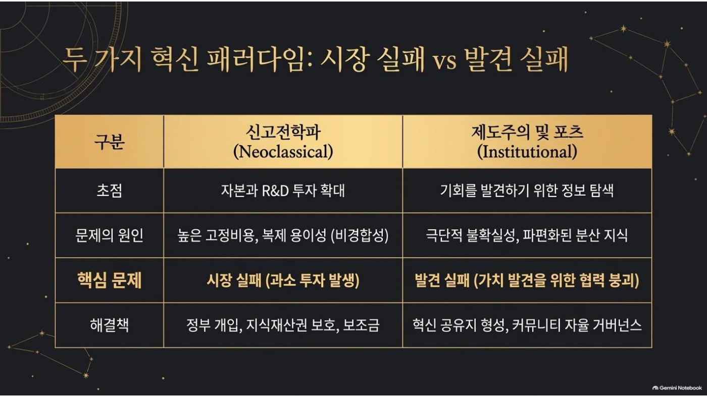
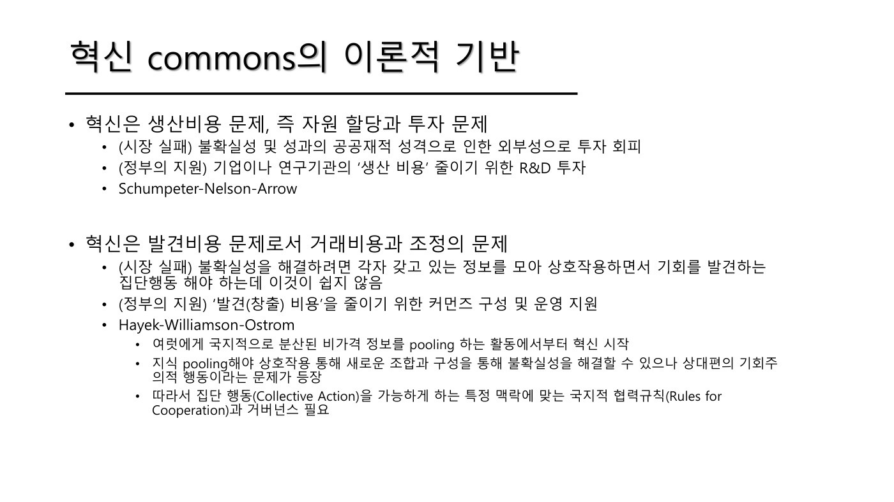
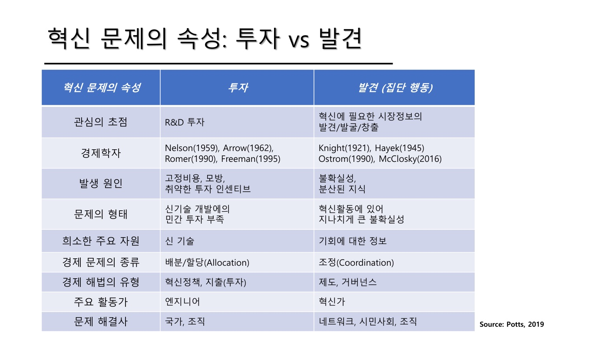
전체 대비표 ★★ (퀴즈 1순위 — 통째로 외울 가치가 있다)
| 혁신 문제의 속성 | 투자 (생산 비용) | 발견 (집단 행동) |
|---|---|---|
| 관심의 초점 | R&D 투자 | 혁신에 필요한 시장정보의 발견·발굴·창출 |
| 경제학자 | Nelson(1959), Arrow(1962), Romer(1990), Freeman(1995) | Knight(1921), Hayek(1945), Ostrom(1990), McCloskey(2016) |
| 발생 원인 | 고정비용, 모방, 취약한 투자 인센티브 | 불확실성, 분산된 지식 |
| 문제의 형태 | 신기술 개발에의 민간 투자 부족 | 혁신활동의 지나치게 큰 불확실성 |
| 희소 자원 | (자본) | 신기술 기회에 대한 정보 |
| 경제 문제 종류 | 배분/할당(allocation) | 조정(coordination) |
| 경제 해법 | 혁신정책, 지출(투자) | 제도, 거버넌스 |
| 주요 활동가 | 엔지니어 | 혁신가 |
| 문제 해결사 | 국가, 조직 | 네트워크, 시민사회, 조직 |
두 계보 ★
- 투자 쪽: Schumpeter → Nelson → Arrow
- 발견 쪽: Hayek → Williamson → Ostrom
발견 쪽 계보에 Williamson(거래비용)이 들어간 것이 눈에 띈다. 거래비용 경제학이 "시장이냐 조직이냐"를 물었다면, Ostrom은 "그 둘 말고 공유지도 있다"를 더한 셈이다. W03/14의 비용 3분류가 이 계보를 따라간다.
패러다임 전환 ★
| 기존 패러다임 | 새 패러다임 | |
|---|---|---|
| 진단 | 지식에 스필오버가 있어 투자해 봤자 옆으로 새니까 민간이 투자를 안 한다 | 문제는 시장 실패가 아니라 발견 실패다 |
| 처방 | 국가가 생산 비용을 보조해 준다 | 국가는 발견(창출) 비용을 줄이도록 커먼즈 구성과 운영을 지원한다 |
"여태까지는 시장 실패. 다 투자해봤자 옆으로 새고 딴 데로 옮기고 그래서 스필오버 되니까 사람들이 투자를 안 한다. 그러니까 나라가 지원해 줘야 된다, 그게 여태까지의 논리였다면. 그게 아니고 발견 실패. 디스커버리를 할 수 있도록 도와줘야 됩니다. 시장을 만들어주든지, 아니면 협력할 수 있는 시스템을 만들어 주든지."
P1 1:05:16
배분(allocation) vs 조정(coordination) 💡
이 한 줄이 두 패러다임의 성격 차이를 가장 압축적으로 보여 준다.
- 배분 문제: 자원은 정해져 있고 누구에게 얼마나 줄지가 문제. → 심사·평가·선정이 핵심 활동이 된다. 그래서 picking winners가 나온다.
- 조정 문제: 누가 무엇을 아는지 모르는 상태에서 어떻게 서로 맞출지가 문제. → 규칙·플랫폼·신뢰가 핵심 활동이 된다. 그래서 거버넌스가 나온다.
정부 부처의 일하는 방식이 전자에 최적화되어 있다는 것이 문제의 핵심이다. 예산을 나누는 조직은 조정을 설계하는 일에 서툴다.
★ W01/06 세 실패와의 관계 (비교형 핵심)
W01/06에서 시장 실패 → 시스템 실패 → 전환 실패의 3단계를 봤다. 그럼 발견 실패는 어디에 들어가나?
| 틀 | 분류 | 성격 |
|---|---|---|
| W01/06 (Weber & Rohracher 계열) | 시장 실패 / 시스템 실패 / 전환 실패 | 혁신정책 정당화 논거의 역사적 확장 |
| W03/13 (Potts) | 시장 실패 / 발견 실패 | 경제 문제의 종류(배분 vs 조정)에 대한 재정의 |
두 틀은 층위가 다르다. 전환 실패는 "어디로 갈지"의 문제(방향성·수요 표출·조율·성찰)이고, 발견 실패는 "무엇이 가능한지조차 모른다"의 문제다. 굳이 겹쳐 보면 발견 실패는 전환 실패의 방향성 문제를 더 앞 단계로 밀어 올린 것으로 읽을 수 있다. 전환 실패는 목표가 있는데 조율이 안 되는 상황이고, 발견 실패는 목표 자체가 안개 속인 상황이다.
★ 퀴즈에서 두 틀을 비교하라는 문제가 나오면 "층위가 다르다"를 분명히 하고, 억지로 하나로 포개지 않는 편이 안전하다.
W02-2/01과의 관계 💡
W02-2의 고전적 공공재 논리(비배제성·비경합성 → 민간 과소투자 → 정부 투자)가 바로 이 표의 왼쪽 칸이다. Arrow와 Nelson이 양쪽 표에 모두 등장한다. 즉 지식의 공공성 논쟁과 발견 실패 논의는 같은 대상을 다른 각도에서 공격하는 셈이다.
- Callon의 비판: 공개해도 재현·활용의 조건이 없으면 못 쓴다.
- Potts의 비판: 투자해도 뭘 할지 모르면 소용없다.
수업에서 나온 논점
- Q4 (실패 비용의 회계 처리): 🗣 '발견 비용'이라는 개념을 더 많이 이야기해 주면 패러다임 전환에도 도움이 된다. 지금은 탐색적 활동이 그냥 버리는 비용으로 처리되어 사람들이 위축된다. → W03/14.
- W03/17 국가 역할의 전환이 이 대비의 정책적 결론이다.
보충 사례
- Arrow (1962): 지식의 비전유성(남이 베낀다), 불가분성, 불확실성 때문에 민간이 과소투자한다는 고전 논증. 💡 흥미롭게도 Arrow도 불확실성을 말했지만, 그것을 투자를 꺼리는 이유로 봤지 조정의 문제로 보지는 않았다. Potts는 같은 불확실성을 다르게 읽는다.
- Knight (1921)의 위험 vs 불확실성 💡: 위험은 확률을 계산할 수 있는 것, 불확실성은 확률조차 모르는 것. 💡 발견 실패 계보의 첫 자리에 Knight가 있는 이유다. Phase 0는 전형적인 Knight적 불확실성 상황이고, 여기서는 기대수익 계산 자체가 불가능하므로 투자 논리가 작동하지 않는다.
- 반론도 알아 둘 것: 발견 실패론이 옳다고 해서 시장 실패론이 폐기되는 것은 아니다. 기초과학처럼 목표는 분명한데 수익화가 어려운 영역에서는 여전히 투자 보조가 필요하다. 🗣 교수도 W03/15에서 "아폴로 프로젝트, 맨해튼 프로젝트는 당연히 그렇죠"라고 인정했다. 두 처방은 상황에 따라 나눠 쓰는 것이지 대체 관계가 아니다.
수업 프레임에서의 위치
- ★ 이 주차 후반부의 이론적 심장. Smith–Hayek–Potts 계보가 이 한 장의 표로 수렴한다.
- W03/12(혁신 공유지)가 발견 실패의 해법, W03/14(비용 3분류)가 그 회계 언어, W03/15(3단계)가 시간 구조, W03/17(제도 건축가)이 정책 결론이다.
- W01/06의 세 실패와 비교하면 혁신정책 담론의 지형이 선명해진다.
- W02-2/01의 공공재 논쟁과 같은 대상을 다룬다.
예상 퀴즈 포인트
-
1
비교형
★★ 시장 실패와 발견 실패를 발생 원인·희소 자원·경제 문제 종류·해법의 네 차원으로 비교하라.
-
2
서술형
★★ "국가는 생산 비용이 아니라 발견 비용을 줄여야 한다"는 주장의 근거와 구체적 정책 방향을 서술하라.
-
3
비교형
★ 비교형: W01의 세 실패(시장·시스템·전환)와 발견 실패는 어떤 관계인가? 층위의 차이를 설명하라.
경제활동 비용의 3종류
Transformation / Transaction / Discovery Cost — 전환 비용 · 거래 비용 · 발굴(창출) 비용
출처
리딩
- Potts (2019)
- Williamson — transaction cost economics
수업노트
- 수업노트/W03_강의기록_260919.md §7-5
- 수업노트/W03_강의기록_260919.md §9 Q4 실패 비용의 회계 처리
한 줄 정의
경제학은 시대마다 "무엇이 비싼가"를 다르게 봤다. 신고전파는 물건을 만드는 비용(전환 비용)을 봤고, 신제도 경제학은 거래를 성사시키는 비용(거래 비용)을 발견했으며, 진화경제학은 애초에 뭘 할지 찾아내는 비용(발굴 비용)을 추가했다. Phase 0는 거래 비용조차 계산이 안 되는 단계다.
쉽게 말하면
집을 짓는다고 하자.
| 전환 비용 | 벽돌값, 인건비, 장비 임대료. 눈에 보이는 비용. |
|---|---|
| 거래 비용 | 시공사를 찾고, 견적을 비교하고, 계약서를 쓰고, 공사가 제대로 되는지 감독하는 데 드는 시간과 신경. 영수증에는 안 찍히지만 분명히 드는 비용. |
| 발굴 비용 | 애초에 어떤 집을 지을지 모르는 상태에서 여기저기 둘러보고, 사람들 얘기 듣고, 모델하우스를 가 보는 비용. 집을 짓기 전에 이미 쓰고 있지만 아무도 이걸 비용으로 적지 않는다. |
핵심 내용
📄 슬라이드 (W03 p40)
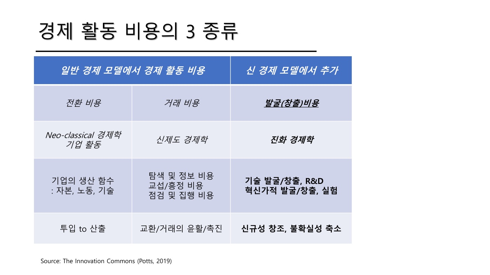
세 비용 ★
| 전환 비용 | 거래 비용 | 발굴(창출) 비용 | |
|---|---|---|---|
| 학파 | 신고전파 경제학 | 신제도 경제학 | 진화 경제학 |
| 내용 | 기업의 생산함수: 자본·노동·기술 | 탐색/정보, 교섭/흥정, 점검/집행 비용 | 기술 발굴·창출, R&D, 혁신가적 발굴·실험 |
| 역할 | 투입 → 산출 | 교환·거래의 윤활 | 신규성 창조, 불확실성 축소 |
- 🗣 거래 비용으로 풀 수 있는 것이 시장 시스템에서는 굉장히 많다. 그 거래 비용조차 계산이 안 될 때가 Phase 0.
왜 이 분류가 중요한가 💡
각 비용 개념은 그 시대 경제학이 무엇을 설명하려 했는지를 보여 준다.
- 전환 비용만 보면 기업은 투입을 산출로 바꾸는 블랙박스다. "왜 기업이라는 조직이 존재하는가"를 설명 못 한다.
- 거래 비용이 등장하자 설명이 생겼다. 시장에서 매번 계약하는 것보다 안에 두는 게 싸면 기업이 된다(Coase, Williamson). → W01/11의 수직통합 vs 외부조달 딜레마가 이 논리다.
- 발굴 비용이 등장하자 또 하나가 설명된다. 거래할 대상조차 모를 때 왜 사람들이 모이는가 → 공유지(W03/12).
즉 세 비용은 각각 생산 / 조직 / 공유지의 존재 이유를 설명한다.
★ 발굴 비용이 회계에 안 잡히는 문제 (Q4)
🗣 질문: 발견 비용을 지원한다는 것은 실패를 정상적인 비용으로 인정한다는 의미인데, 실패 비용이 회계적으로 마이너스로 처리되기 때문에 사람들이 위축된다. 이를 긍정적으로 회사의 평가 체계에 옮길 방법이 있을까?
🗣 교수의 답변:
- 차이의 핵심: 예전에는 "여기 뭐가 있으니 찾아내라"는 R&D였기에 "그래서 뭐가 나왔어?"를 물을 수 있었다. 그런데 지금은 탐색적(exploratory)으로 이것저것 쳐 보는 것이라 카운팅이 안 된다. 그냥 버리는 비용으로 생각하니 위축된다.
- 제안: '발견 비용'이라는 개념을 더 많이 이야기해 주면 패러다임 전환에도 도움이 된다. 지금은 기술 개발의 실패조차 제대로 카운팅해 주지 않는 상황이므로, 발견 패러다임 맥락에서 접근하면 여러 시도의 폭을 넓히는 방향으로 생각해 볼 수 있다.
이것이 이 개념의 가장 실용적인 쓸모다. 조직에서 탐색적 시도를 늘리려면 그것을 부르는 이름이 필요하다. "실패"가 아니라 "발견 비용"이라고 부를 수 있으면 예산 항목과 평가 기준이 달라진다. → ★ W03/13의 "국가는 발견 비용을 줄여야 한다"의 기업 버전.
수업에서 나온 논점
- Q4 (김예나)의 후속 질문에서 나온 논의. 사내 AI 개방 사례 → 실패 비용의 회계 처리 → 발견 비용 개념. →
수업노트/W03 §9 Q4 - 이 흐름 자체가 term paper 소재가 된다. 탐색적 활동의 비용을 어떻게 측정·인정할 것인가는 W02-1/04(DUI 지표 측정)와 같은 종류의 문제다. 교수가 그때도 "인디케이터를 더 만들면 된다"고 했다.
보충 사례
- Coase (1937) "The Nature of the Firm": 💡 거래 비용 개념의 출발. 시장이 완벽하다면 모든 일을 외주로 하면 되는데 왜 기업이 존재하는가라는 질문에서 시작했다. Williamson이 이를 자산 특수성·기회주의·제한된 합리성으로 정교화해 노벨상을 받았다(2009년, Ostrom과 공동 수상).
- Ostrom과 Williamson이 같은 해에 노벨상을 받은 것이 상징적이다. 둘 다 "시장이냐 위계냐"의 이분법을 넘어선 거버넌스를 연구했다. Potts의 발견 실패 계보에 Williamson이 들어간 이유.
- R&D 회계 처리 💡: 회계 기준상 연구(research) 단계 지출은 비용으로 처리되고 개발(development) 단계의 일부만 자산화된다. 즉 탐색적 활동일수록 회계상 불리하다. 🗣 "회계적으로 마이너스로 처리된다"는 질문자의 지적이 제도적으로 정확하다.
수업 프레임에서의 위치
- W03/13(발견 실패)의 비용 언어 버전. 같은 주장을 회계·경제학의 언어로 다시 쓴 것.
- W03/12 Phase 0의 정의에 쓰인다. 🗣 "거래 비용조차 계산이 안 될 때가 Phase 0."
- W01/11의 수직통합 딜레마(거래 비용 논리)와 연결된다.
예상 퀴즈 포인트
-
1
서술형
★ 경제활동 비용의 세 종류를 학파·내용·역할로 구분해 설명하라.
-
2
서술형
★ "거래 비용조차 계산이 안 될 때가 Phase 0"라는 말의 뜻을 설명하라.
-
3
서술형
발굴(발견) 비용이 회계와 평가 체계에서 제대로 인정받지 못하는 이유와, 그 결과 조직에서 벌어지는 일을 서술하라.
★ 새로운 혁신관 3단계 — Phase 0 / 1 / 2
Innovation Commons → Hayekian Market Discovery → Smithian Scale-up — Phase 0 → Phase 1 → Phase 2
출처
리딩
- Potts (2019) Innovation Commons ★
수업노트
- 수업노트/W03_강의기록_260919.md §8-4 [P1 1:17:23]
- 수업노트/W03_강의기록_260919.md §9 Q4 [P2 12:35]
한 줄 정의
혁신은 세 단계를 거친다. Phase 0는 아무것도 모를 때 모여서 정보를 나누는 단계(Potts의 혁신 공유지), Phase 1은 기회의 윤곽이 잡혀 경쟁하며 가격과 가치를 발견하는 단계(Hayek), Phase 2는 목표가 확정되어 분업으로 규모를 키우는 단계(Smith)다. 🗣 "우리는 계속 Phase 2에서만 해 왔다."
쉽게 말하면
새 음식을 만들어 파는 과정이라고 보면,
| 상황 | 하는 일 | |
|---|---|---|
| Phase 0 | 뭘 만들지도 모른다 | 요리 좋아하는 사람들이 모여 재료를 나누고 이것저것 해 본다 |
| Phase 1 | "이 조합이 되겠다"는 감이 왔다 | 여러 가게가 각자 버전으로 팔아 본다. 손님 반응으로 가격과 레시피가 정해진다 |
| Phase 2 | 메뉴와 가격이 확정됐다 | 공장을 세우고 분업해서 대량 생산한다 |
한국이 잘해 온 것은 세 번째다. 메뉴가 정해진 다음부터는 세계 최고로 빠르다. 문제는 메뉴를 정하는 앞 두 단계다.
핵심 내용
📄 슬라이드 (W03 p43) ★★
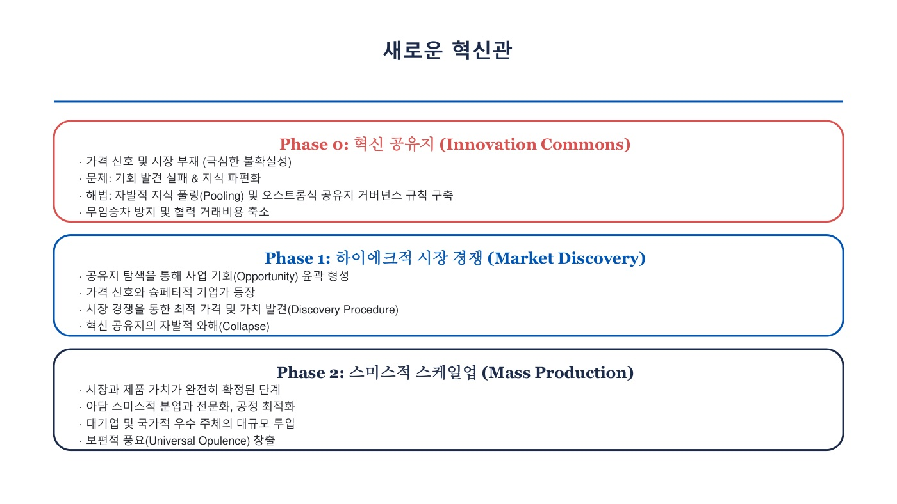
3단계 전체표 ★★ (통째로 암기 권장)
| Phase 0: 혁신 공유지 (Innovation Commons) | Phase 1: 하이에크적 시장 경쟁 (Market Discovery) | Phase 2: 스미스적 스케일업 (Mass Production) | |
|---|---|---|---|
| 상황 | 가격 신호·시장 부재, 극심한 불확실성 | 기회(Opportunity)의 윤곽이 잡힘 | 시장과 제품 가치가 완전히 확정됨 |
| 문제 | 기회 발견 실패, 지식 파편화 | 최적 가격·가치 발견 | 생산성·수율 극대화 |
| 해법 | 자발적 지식 풀링 + 오스트롬식 공유지 거버넌스 규칙 구축 | 가격 신호와 슘페터적 기업가 등장, 발견 절차로서의 경쟁 | 아담 스미스적 분업과 전문화, 공정 최적화, 대기업·국가의 대규모 투입 |
| 결과 | 무임승차 방지 및 협력 거래비용 축소 | 혁신 공유지의 자발적 와해(Collapse) | 보편적 풍요(Universal Opulence) 창출 |
| 대표 학자 | Potts (Ostrom + Hayek) | Hayek, Schumpeter | Adam Smith |
🗣 핵심 비판: 우리는 Phase 2에서만 해 왔다 ★★
"우리가 계속 따지고 보면 여기서만(Phase 2) 계속해 왔죠. 저 위쪽(Phase 0)으로 풀었어야 되는 것들도 다. 기술 자체를 개발하는 거라면 그게 맞죠 — 아폴로 프로젝트, 맨해튼 프로젝트는 당연히 그렇죠. 그 기술을 개발하는 거잖아요, 거기서 돈을 벌겠다는 의미가 아니었잖아요. 근데 그게 아니고 경제에 도움이 된다거나 하는 거라면 다르죠. 그걸 지금 제대로 못하고 있는 거죠."
P1 1:17:23
이 발언에 중요한 단서가 들어 있다. 교수는 Phase 2 방식(목표 지정 + 대규모 투입)이 늘 틀렸다고 말하지 않는다. 아폴로·맨해튼 프로젝트처럼 목표가 분명하고 수익이 목적이 아닌 기술 개발에는 그 방식이 맞다. 문제는 경제적 가치 창출이 목적인데도 같은 방식을 쓰는 것이다.
→ 이 단서가 W13 임무지향형 혁신정책(MOIP)과 연결된다. MOIP는 아폴로식 미션 접근을 사회 문제에 적용하자는 주장인데, 이 단서에 비추면 "미션이 분명한가"가 관건이 된다.
🗣 단계는 칼같이 나뉘지 않는다
- 현실에서 단계가 칼같이 나뉘지는 않는다. 사람들은 늘 투자도 하고 있어서 병렬적으로 진행된다.
즉 3단계는 시간 순서이기도 하지만 분석 도구에 가깝다. 같은 시점에도 어떤 영역은 Phase 0, 어떤 영역은 Phase 2일 수 있다.
★ 파도형/동심원형과의 교차 (W03/03)
🗣 Q4에서 교수는 "동심원형 혁신의 Phase 0"라는 조합을 직접 썼다. 두 프레임을 교차하면 2×3 매트릭스가 된다.
| Phase 0 | Phase 1 | Phase 2 | |
|---|---|---|---|
| 파도형 (신기술) | 홈브루 클럽, Hugging Face, 초기 오픈소스 | AI 모델 경쟁, 스타트업 각축 | 반도체 대량생산, 플랫폼 지배 |
| 동심원형 (업그레이드) | 🗣 사내 AI 자유 실험 기간 — "이게 될지 안 될지 모르는" 단계 | 어떤 업무에 적용할지 경쟁적으로 시도 | 전사 표준 프로세스로 확정·배포 |
Q4 사례의 핵심이 여기 있다. 사내 AI 개방 직후는 동심원형 Phase 0였는데, 조직이 Phase 2의 기준("업무에 대한 것만 해라", 성과 중심)을 들이대자 탐색이 죽었다. 단계를 잘못 읽은 것이다.
"처음 한동안은 불확실성 속에 놓일 수밖에 없는 상황인데, 그거를 디폴트로 인정하고 가준다면 사람들이 집에서 따로 하지 않고 편안하게 동심원형 혁신을 할 수 있었을 텐데. 거기서도 Stage 0가 벌어질 수 있다는 말씀."
P2 12:35
공유지의 자발적 와해 — Phase 0 → 1 전이 📄
- 공유지에서의 자발적 실험으로 기술적 가능성과 시장 기회의 윤곽이 드러나면 Phase 0의 목적은 달성되고, 공유지는 자발적으로 와해된다.
와해가 설계된 결말이라는 점이 중요하다. 공유지를 영원히 지키려는 것이 목적이 아니다. 다만 누가 그 성과를 가져가는가는 거버넌스 설계의 문제로 남는다.
수업에서 나온 논점
- ★ 이 틀이 term paper 분석 프레임으로 가장 쓰기 좋다. 어떤 케이스든 "지금 몇 단계인가, 단계에 맞는 거버넌스를 쓰고 있는가"를 물을 수 있다.
- Q6: 🗣 "아무것도 모를 때는 경쟁도 안 되는 거죠. 같이 모여서 얘기하는 방식이 있다는 게 Potts가 얘기한 거고." → Phase 0와 Phase 1의 경계를 설명하는 발언.
- Q5 (시스템 혁신): 🗣 큰 조직은 "도저히 안 되겠다" 싶어야 움직인다. → Phase 전환이 조직에서 왜 늦는지.
보충 사례
- Linux와 Red Hat 💡: 커널은 Phase 0의 공유지에서 자랐지만, 기업용 배포판과 지원 서비스로 수익화되며 Phase 1~2로 넘어갔다. 💡 OpenAI와 달리 공유지가 와해되지 않고 병존한 사례다. 라이선스(GPL)라는 거버넌스 규칙이 공유지를 지켰기 때문. 거버넌스 설계가 결말을 바꾼다는 증거.
- Android vs iOS 💡: W01/11에서 본 사례를 이 틀로 다시 보면, 안드로이드는 Phase 1을 오래 열어 둔 전략(여러 제조사가 경쟁)이고 애플은 Phase 2로 빨리 닫은 전략이다. 🗣 Q6의 "장기적으로는 개방이 낫다"가 이 맥락.
- 한국 정책에 적용하면: R&D 예산의 대부분이 "과제 선정 → 목표 달성 평가" 구조, 즉 Phase 2 문법으로 집행된다. Phase 0에 해당하는 공유지 조성·데이터 거버넌스 구축에는 예산 항목조차 마땅치 않다. 🗣 "그걸 지금 제대로 못하고 있는 거죠"의 실체.
수업 프레임에서의 위치
- ★ 이 주차 후반부의 결론. Smith(W03/10) → Hayek(W03/11) → Potts(W03/12)가 역순으로 배치된 이유가 여기서 드러난다.
- W03/13(발견 실패)이 왜 중요한지를, 이 3단계가 언제 중요한지를 말한다.
- W03/03(파도형/동심원형)과 교차하면 분석틀이 된다.
- W03/17(제도 건축가)이 이 틀의 정책적 결론.
- W01/01의 "혁신은 solo act인가"라는 질문에 대한 최종 답이기도 하다. Phase 0에서는 명백히 집단적이다.
예상 퀴즈 포인트
-
1
서술형
★★ 새로운 혁신관 3단계를 상황·문제·해법·결과의 네 차원으로 각각 서술하라.
-
2
서술형
★★ "우리는 계속 Phase 2에서만 해 왔다"는 비판의 뜻과, 그럼에도 Phase 2 방식이 정당한 경우(아폴로·맨해튼)를 구분해 설명하라.
-
3
서술형
★ Phase 0에서 Phase 1로 넘어갈 때 공유지가 자발적으로 와해된다는 것의 의미를 OpenAI 사례로 설명하라.
-
4
서술형
★ 응용: 파도형/동심원형 구분과 3단계를 교차해 사례를 하나 분석하라. (예: 사내 AI 개방)
-
5
서술형
응용: 한국 R&D 정책이 Phase 0를 지원하려면 무엇이 달라져야 하는가?
혁신 주체로서 시민의 역할
The Citizen as Innovation Actor across Smith / Hayek / Potts — Smith에서 Potts까지, 시민의 자리는 어떻게 바뀌었나
출처
리딩
- Potts (2019)
- McCloskey (2016)
- 임홍탁 (2025) 혁신주체로서의 시민 (W15 리딩)
수업노트
- 수업노트/W03_강의기록_260919.md §8-5
한 줄 정의
같은 "사람"인데 경제학자마다 다르게 본다. Smith에게 시민은 분업 체계 안의 전문 노동자이고, Hayek에게는 현장 지식을 가진 정보 주체이며, Potts와 McCloskey에게는 Phase 0에서 함께 만드는 공동 창작자이자 civic actor다. 뒤로 갈수록 시민은 생산 요소에서 혁신의 주체로 올라간다.
쉽게 말하면
오케스트라에서 연주자의 위치가 바뀌는 것과 비슷하다.
| Smith | 지정된 악보를 정확히 연주하는 파트 연주자. |
|---|---|
| Hayek | 자기 자리에서만 들리는 소리를 지휘자에게 알려 주는 사람. 그 정보가 없으면 전체가 어긋난다. |
| Potts·McCloskey | 아예 어떤 곡을 연주할지 함께 정하는 사람. 그리고 "이 곡을 연주해도 되는가"를 판단하는 사람이기도 하다. |
핵심 내용
📄 슬라이드 (W03 p44) ★
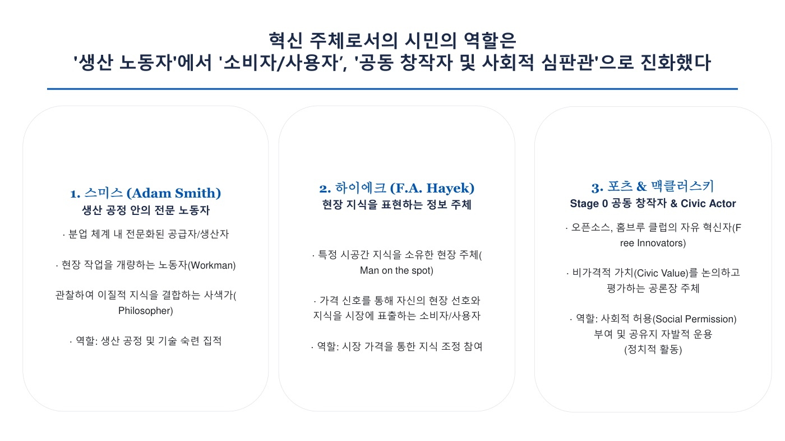
세 관점에서의 시민 ★ (비교형 핵심)
| Smith | Hayek | Potts & McCloskey | |
|---|---|---|---|
| 시민의 위치 | 생산 공정 안의 전문 노동자 | 현장 지식을 표현하는 정보 주체 | Stage 0 공동 창작자 & Civic Actor |
| 구체적 역할 | 분업 체계의 공급자·생산자, 현장을 개량하는 노동자, 관찰하는 사색가 | 특정 시공간 지식을 가진 man on the spot, 가격 신호로 선호를 표출하는 소비자/사용자 | 오픈소스·홈브루 클럽의 자유 혁신자(free innovators), 비가격적 가치(civic value)를 논의·평가하는 공론장 주체 |
| 기여 | 생산 공정·기술 숙련 집적 | 가격을 통한 지식 조정 | 사회적 허용 부여 및 공유지 자발적 운용 (정치적 활동) |
맨 아래 칸의 "(정치적 활동)"이라는 괄호가 중요하다. Smith와 Hayek에게 시민의 기여는 경제적이지만, Potts·McCloskey 단계에서는 정치적 성격을 띤다. 혁신을 허용할지 말지를 판단하는 것은 경제 행위가 아니라 정치 행위다. → W01/01의 정치·경제·혁신 삼분법으로 돌아온다.
🗣 교수가 보탠 부분 ★
- 🗣 지식의 발견에는 비가격적 가치도 들어갈 수 있다. 경제적 가치만이 아니라 "이게 철학적으로 의미 있는가, 안전한가" 같은 이야기를 그때(Phase 0에서) 같이 할 수 있다.
이것이 Potts의 원래 논의를 넘어서는 교수의 기여다. Potts에게 Phase 0는 주로 기술적·사업적 기회를 찾는 자리인데, 교수는 거기에 가치 판단의 자리를 더한다. 즉 공유지는 "뭐가 돈이 될까"만이 아니라 "이걸 해도 되는가"를 묻는 공론장이기도 하다.
→ 이 확장이 W03/18(혁신의 사회적 허용)로 이어지고, W15 신시민성(임홍탁 2025)의 주제가 된다.
왜 Phase 0에서 시민이 중요한가 💡
- Phase 2에서는 시민이 소비자다. 제품이 나온 뒤에 살지 말지 결정한다. 이때의 거부는 시장 실패로 나타난다.
- Phase 0에서는 시민이 참여자다. 무엇을 만들지 정하는 단계에 들어온다.
- 핵심 차이: 나중에 거부하면 이미 돈과 시간이 다 들어간 뒤다. W02-1/06의 불만족스러운 혁신이 바로 그것이고, W03/08 CTA의 Collingridge 딜레마도 같은 문제다. 시민을 Phase 0로 당겨 오는 것이 그 비용을 줄이는 길이다.
★ W01과의 연결 — 같은 주장의 세 번째 등장
| 주차 | 어떻게 나왔나 |
|---|---|
| W01/07 | 공공가치와 Civic Actor — 🗣 사람을 entrepreneur로만 보지 말고 civic actor로 보자 |
| W01/08 | 시민성의 네 유형 — Communitarian / Scientific / Digital / Ecological. citizen variety |
| W03/16 | 경제학 계보 안에서 시민의 자리 — Phase 0 공동 창작자 |
W01에서는 문제의식으로 제시됐던 것이 W03에서는 경제 이론 안의 위치로 정식화된다. 그리고 W15에서 독립 주제가 된다. 이 수업의 세 번 반복되는 주제 중 하나.
수업에서 나온 논점
- Q2 (커먼스 설계의 기준): 참여자들이 왜 데이터를 안 내놓는가의 문제. 시민·조직을 Phase 0 참여자로 만드는 것이 실제로는 가장 어려운 일임을 보여 준다.
- Q9 (embedded autonomy와 민주주의): 🗣 "그럼에도 불구하고 민주주의를 하는, 왜냐하면 안 그러면 결국에는 인종주의, 에스닉하게 갈 수밖에 없어." → 시민의 참여를 효율로만 재면 안 된다는 입장. →
수업노트/W03 §9 Q9
보충 사례
- Free innovators 💡: von Hippel의 free innovation 연구가 이 용어의 출처로 보인다. 💡 사용자가 자기 필요로 무언가를 만들고 대가 없이 공유하는 현상. 설문 연구에서 영국·미국·일본 성인의 몇 퍼센트가 이런 활동을 한다는 추정치가 나왔다. W02-1/07의 lead user 논의와 같은 계보.
- 시민과학(citizen science) 💡: 아마추어가 데이터 수집·분류에 참여하는 프로젝트(은하 분류, 조류 관찰 등). 💡 Phase 0 공유지의 과학 버전으로 볼 수 있다.
- 비판적 시각: "시민 참여"가 알리바이로 쓰일 위험이 있다. 공론장을 열었다는 형식만 갖추고 실제 결정은 이미 내려져 있는 경우. 참여의 시점(Phase 0인가)과 권한(결정에 구속력이 있는가)이 관건이다. 신고리 공론화가 주목받은 이유도 결과에 구속력이 있었기 때문이다.
수업 프레임에서의 위치
- W03 후반부의 사회적 함의 부분. W03/15(3단계)를 사람의 자리에서 다시 읽은 것.
- W01/07–08의 문제의식 3이 경제 이론 안으로 들어온 지점.
- W03/18(부르주아적 합의, 사회적 허용)의 전제.
- W15 신시민성(임홍탁 2025)의 직접적 예고. 🗣 교수 본인의 연구 주제이기도 하다(W01 자기소개: "Citizen as Innovation actor").
예상 퀴즈 포인트
-
1
비교형
★ Smith·Hayek·Potts에서 시민의 위치와 역할이 어떻게 달라지는지 비교하라.
-
2
비교형
★ Phase 0에서 시민이 참여하는 것과 Phase 2에서 소비자로 반응하는 것의 차이는 무엇이며, 왜 전자가 중요한가?
-
3
비교형
비교형: W01의 citizen variety와 W03의 Stage 0 공동 창작자는 어떻게 연결되는가?
국가 역할의 전환 — 지휘관에서 제도 건축가로
From Commander to Institutional Architect — From Commander to Institutional Architect
출처
리딩
- Potts (2019)
- Mazzucato (2016) — 비교 대상
수업노트
- 수업노트/W03_강의기록_260919.md §8-6 [P1 1:19:44]
- 수업노트/W03_강의기록_260919.md §7-6 거버넌스는 국지적이어야 한다
한 줄 정의
국가가 "이 기술, 이 연구자"를 직접 찍어 주는 지휘관 노릇을 그만두고, 분산된 지식 주체들이 마음껏 시도하고 기회를 발견할 판을 짜 주는 제도 건축가가 되어야 한다. 지휘관 모델은 지식 발견에 실패하고, 감사 위험 때문에 안전한 과제만 쏠리게 만들며, 추격형 관성에 갇혀 프론티어를 못 연다.
쉽게 말하면
축구에 비유하면,
- 지휘관(Commander): 감독이 모든 선수의 움직임을 미리 정해 주고 그대로 하는지 감시한다. 상대가 예상대로 나오면 잘 통한다. 추격할 때는 효과적이다 — 앞선 팀이 뭘 하는지 보고 따라 하면 되니까.
- 제도 건축가(Institutional Architect): 감독이 경기장 규칙과 훈련 환경을 만들고, 선수들이 서로 보며 판단하게 한다. 상대가 뭘 할지 모를 때 필요한 방식이다.
문제는 아무도 어디로 갈지 모르는 경기에서 지휘관 방식을 쓰면, 감독이 모르는 것을 선수들도 못 하게 된다는 점이다.
핵심 내용
📄 슬라이드 (W03 p45) ★
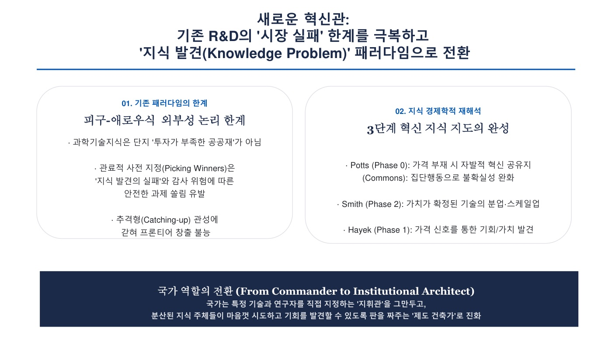
기존 패러다임의 한계 📄 ★
| 한계 | 내용 |
|---|---|
| 공공재 가정의 오류 | 과학기술지식은 단지 '투자가 부족한 공공재'가 아니다 |
| picking winners의 실패 | 관료적 사전 지정은 지식 발견의 실패를 부른다 |
| 감사 위험 | 감사 위험에 따른 안전한 과제 쏠림 |
| 추격형 관성 | 추격형 관성에 갇혀 프론티어 창출이 불가능해진다 |
네 가지가 사슬처럼 엮여 있다. 공공재로 보니까 돈을 주는 게 정책이 되고, 돈을 주려니 누구에게 줄지 골라야 하고, 고르려니 평가 기준이 필요하고, 평가받는 쪽은 확실히 성공할 과제만 낸다. 그 결과 성공률은 높은데 새로운 것은 없다.
→ W03/11의 🗣 "감사 회피를 위한 안전한 99% 성공 과제 쏠림"이 그 증상.
국가 역할의 전환 📄 ★★
| 지휘관 (Commander) | 제도 건축가 (Institutional Architect) | |
|---|---|---|
| 하는 일 | 특정 기술·연구자 지정 | 시도하고 발견할 판을 짠다 |
| 전제 | 상부가 기술 가치를 안다 | 아무도 미리 모른다 |
| 수단 | 예산 배분, 서류 심사 | 거버넌스 규칙, 공유지 조성, 데이터 공유 제도 |
| 대응 단계 | Phase 2 | Phase 0 |
🗣 그런데 이게 쉽지 않다 ★
"거버넌스를 만드는 게 쉬운 일이 아니에요. 사람들이 데이터를 내게끔 하는 것들이 피지컬 AI에 필요한데, 그 작업이 굉장히 쉬운 일이 아니에요. 그걸 어떻게 잘할 수 있는지는 정말 고민이 많이 필요하다."
P1 1:19:44
교수가 이 대목에서 솔직하게 인정하는 부분이다. "제도 건축가가 되어라"는 처방은 방향은 맞지만 구체적 방법론이 아직 없다. 돈을 나누는 일은 매뉴얼이 있지만 신뢰를 설계하는 일은 매뉴얼이 없다.
🗣 거버넌스는 국지적이어야 한다 ★
- 기회주의를 막으려면 모니터링하고 제재해야 하는데, 그러려면 현장 가까이 있어야 한다.
- 🗣 예: 의료 데이터로 커먼즈를 만든다면 전국 단위로는 안 된다. 부산시는 부산시 단위로 해야 온·오프라인에서 서로 모니터링이 된다.
이것이 제도 건축가 역할의 구체적 설계 원칙이다. 중앙정부가 전국 단위 플랫폼을 만드는 방식은 지휘관 모델의 재판이 되기 쉽다. 지역 단위 커먼즈를 여러 개 만드는 쪽이 Ostrom의 원칙에 맞다. → 교수의 전공(지역혁신)과도 맞물린다.
★ Mazzucato와의 비교 💡
W01/01과 W13에서 나올 Mazzucato의 기업가형 국가와 대비하면 흥미롭다.
| Mazzucato (기업가형 국가) | Potts·교수 (제도 건축가) | |
|---|---|---|
| 국가의 역할 | 방향을 정하고 과감히 투자한다. 시장을 만든다(market-creating) | 판을 깔고 조정한다. 발견 비용을 줄인다 |
| 전제 | 국가가 미션을 설정할 수 있다 | 아무도 미리 모른다 |
| 위험 | 지휘관 모델로 되돌아갈 수 있다 | 방향성이 없어 표류할 수 있다 |
둘은 긴장 관계다. 🗣 교수가 W03/15에서 "아폴로·맨해튼은 당연히 그렇죠"라고 한 단서가 이 긴장을 조정한다. 미션이 분명한 영역에서는 Mazzucato, 안개 속에서는 Potts. ★ W13 MOIP 주차에서 이 비교가 본격화될 것이므로 미리 정리해 둘 가치가 있다.
수업에서 나온 논점
| Q6 (embedded autonomy 보충) | 🗣 "굉장히 잘하고 착하고 딴짓도 안 하고, 그럼에도 불구하고 쏠리면 한계가 있을 수 있다. 캐치업할 때는 그게 맞지만, 지금은 오히려 다양성을 더 확대하는 게 필요하다." → 한국 관료제가 유능해도 지휘관 모델 자체의 한계가 있다는 지적. W02-1/10의 embedded autonomy 평가를 뒤집는 대목. |
|---|---|
| Q9 (민주주의와의 관계) | 제도 건축가 모델은 참여와 분산을 전제하므로 민주주의와 친화적이다. 🗣 그럼에도 민주주의가 효율적이지 않아 보일 때의 문제를 다뤘다. |
| Q2 (커먼스 설계) | 🗣 "지금은 시작조차 못 하고 있다." 제도 건축가 역할이 비어 있다는 진단. |
보충 사례
- DARPA 💡: W01 Q5에서 🗣 교수가 "조직 바깥에 태스크포스를 따로 만들어라, DARPA처럼"이라고 했다. DARPA는 지휘관 모델과 제도 건축가 모델의 중간에 가깝다. 미션은 주되 프로그램 매니저에게 큰 재량을 주고 실패를 허용한다. 💡 "미션 지향 + 분권적 실행"의 조합.
- 데이터 중개·신탁 제도 💡: 유럽의 데이터 거버넌스법(DGA)은 데이터 중개 서비스와 데이터 이타주의 단체를 제도화했다. 💡 국가가 데이터를 직접 모으는 대신 신뢰할 수 있는 중개 틀을 만드는 접근으로, 제도 건축가 역할의 구체적 사례로 읽을 수 있다.
- 한국 적용의 어려움: 감사 제도가 과정의 적법성을 보기 때문에, 결과가 불확실한 탐색적 사업은 집행 자체가 위험하다. 제도 건축가로 가려면 R&D 예산 체계만이 아니라 감사·평가 제도까지 함께 바뀌어야 한다는 함의가 나온다.
수업 프레임에서의 위치
- W03 후반부의 정책적 결론. W03/13(발견 실패)의 처방.
- W01/04 Korea Paradox와 W01/05 개발국가 멘탈리티에 대한 답.
- W02-1/10의 embedded autonomy 평가를 재검토하게 만든다. 유능한 관료제가 추격에는 최적, 프론티어에는 한계.
- W13 MOIP에서 Mazzucato와의 긴장으로 다시 다뤄질 것.
예상 퀴즈 포인트
-
1
비교형
★★ 지휘관 모델과 제도 건축가 모델을 비교하고, 전자의 네 가지 한계를 서술하라.
-
2
서술형
★ 거버넌스가 국지적이어야 하는 이유를 모니터링과 제재의 관점에서 설명하라.
-
3
비교형
★ 비교형: Mazzucato의 기업가형 국가와 제도 건축가 모델은 어떻게 다른가? 어느 상황에 어느 쪽이 적합한가?
-
4
서술형
응용: 한국의 R&D 정책을 제도 건축가 모델로 바꾸려면 구체적으로 무엇을 해야 하는가?
McCloskey의 부르주아적 합의와 혁신의 사회적 허용
Bourgeois Deal; Social Permission to Innovate — Bourgeois Deal; Social Permission to Innovate
출처
리딩
- McCloskey (2016) Bourgeois Equality
- Mokyr — 비교 대상
수업노트
- 수업노트/W03_강의기록_260919.md §8-7, §8-8
- 수업노트/W03_강의기록_260919.md §9 Q8
한 줄 정의
McCloskey는 근대의 성장이 자본이나 제도가 아니라 "혁신가를 내버려 두자"는 사회적 태도의 변화에서 왔다고 본다. 그 거래가 부르주아적 합의다. "자유롭게 실험하게 해 달라. 그 결과 생긴 풍요는 사회 전체가 나눠 갖겠다." 뒤집어 말하면, 그 허락을 못 받은 기술은 아무리 뛰어나도 소멸한다. 이것이 혁신의 사회적 허용이다.
쉽게 말하면
동네에 새 가게를 열려는 사람과 주민들 사이의 암묵적 거래 같은 것이다.
"내가 뭘 팔든 간섭하지 마세요. 대신 장사가 잘되면 동네가 같이 좋아집니다."
이 거래가 성립하면 가게가 많이 생기고 동네가 번성한다. 거래가 깨지면 — 즉 "저 가게 때문에 동네가 시끄럽다"가 되면 — 아무리 좋은 아이템이어도 문을 못 연다.
GMO, 자율주행, 유전자 편집, AI 데이터센터가 지금 이 거래를 다시 협상하는 중이다.
핵심 내용
📄 슬라이드 (W03 p46) ★
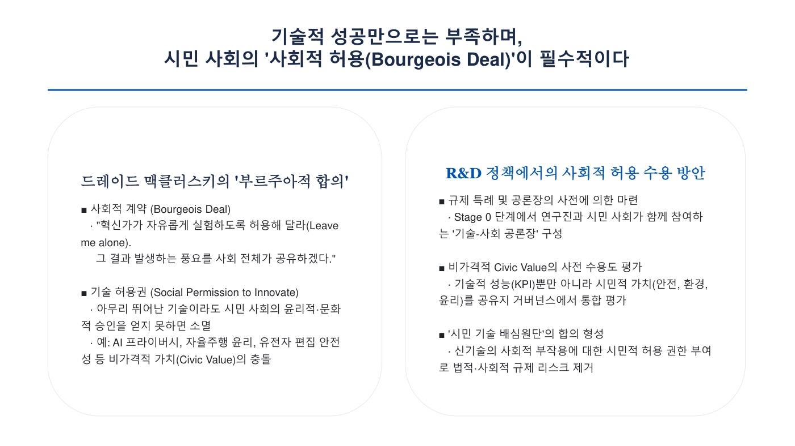
🗣 McCloskey 소개
- Deirdre McCloskey(경제사학자): 시장주의자이면서 자유로운 시장 경쟁과 공정한 대가의 구조를 강조.
- 🗣 교수의 소개: "Mokyr와 비슷한 주제를 다루는, 재미있는 학자."
두 사람의 대비가 흥미롭다. 둘 다 "왜 근대에 성장이 폭발했나"를 묻는데,
- Mokyr(W02-1/05): 지식의 코드화가 접근 비용을 낮췄다 → 지식의 문제
- McCloskey: 혁신가를 대하는 태도가 바뀌었다 → 가치관·수사(rhetoric)의 문제
McCloskey는 상업과 혁신에 대한 사회적 존중이 생긴 것이 결정적이라고 본다. 전통 사회에서 상인은 천대받았지만(🗣 W02-1/08의 "사농공상, 상은 제일 격이 떨어지는" 조선 이야기와 통한다), 근대에 그 평가가 뒤집혔다는 것.
부르주아적 합의(Bourgeois Deal) ★
양방향 거래라는 점이 핵심이다. 자유만 요구하는 것이 아니라 풍요의 공유를 약속한다. 그래서 이 합의는 깨질 수 있다.
- 혁신가 쪽이 풍요를 공유하지 않으면 → 사회가 자유를 거둬들인다.
- 사회가 자유를 안 주면 → 혁신이 멈춘다.
→ W01/07의 구조적인 박스(Bank of Parents, 지역 격차) 논의가 바로 "풍요가 정말 공유되고 있는가"에 대한 의문이다. 두 주차가 여기서 만난다.
혁신의 사회적 허용(Social Permission to Innovate) ★★
"소멸한다"는 표현이 강하다. 시장에서 안 팔리는 수준이 아니라 아예 금지되거나 사회적으로 퇴출된다는 뜻이다. GMO가 유럽에서 그랬고(W01/07, W02-1/06), 지금 AI 데이터센터가 미국에서 그 길을 걷고 있다.
→ W02-1/06의 🗣 "유용하냐 아니냐가 아니고 좋다 싫다가 돼버리는 거예요"가 이것의 소비자 버전이다.
📄 정책 수용 방안 ★
| 방안 | 내용 |
|---|---|
| 기술-사회 공론장 | Stage 0에서 연구진과 시민이 함께하는 자리 |
| 시민적 가치의 사전 수용도 평가 | 기술 KPI뿐 아니라 시민적 가치를 함께 평가 |
| 시민 기술 배심원단 | 합의 형성 |
세 가지 모두 "나중에"가 아니라 "Stage 0에서"를 강조한다. W03/16에서 본 "시민을 Phase 0로 당겨 온다"는 주장의 구체적 수단이고, W03/08 CTA의 세 전략과도 겹친다.
마무리 틀 — 정치·경제·혁신의 재등장 📄 (p47)
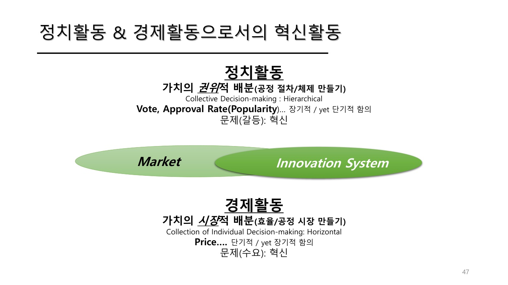
🗣 지난 질문 중 "정치활동·경제활동·혁신활동이 다 섞여 있다는 게 무슨 의미인가"에 대한 답으로 제시된 슬라이드.
| 정치활동 | 경제활동 | |
|---|---|---|
| 배분 방식 | 가치의 권위적 배분 (공정 절차/체제 만들기) | 가치의 시장적 배분 (효율/공정 시장 만들기) |
| 의사결정 | Collective Decision-making: Hierarchical | Collection of Individual Decision-making: Horizontal |
| 신호 | Vote, Approval Rate / 장기적 yet 단기적 함의 | Price / 단기적 yet 장기적 함의 |
| 혁신은 어떻게 나타나나 | 문제(갈등) | 문제(수요) |
- ★ 핵심: 혁신은 정치 쪽에서는 갈등으로, 경제 쪽에서는 수요로 나타난다. 같은 혁신이 양쪽에서 다른 얼굴을 한다. 타다가 그랬고(경제적으로는 수요, 정치적으로는 갈등), AI 데이터센터가 그렇다.
→ W01/01의 첫 슬라이드가 한 학기의 3주차 만에 다시 나왔다. W01에서는 "혁신은 solo act인가"를 물었고, 여기서는 "혁신은 정치이기도 하다"로 답한다.
수업에서 나온 논점
- ★ Q8 (빅테크 시대의 플랫폼 규제 — 언제 개입해야 하나): 📄 p46과 직접 연결된 질문.
- 🗣 미국 FTC 젊은 위원장(※Lina Khan 추정)이 플랫폼 기업을 강하게 겨눴지만 지금은 예전만큼 못 하는 것 같다. 💡 플랫폼의 반경쟁 문제를 논문으로 밝혀낸 뒤 규제로 이어진 사례로 언급됐다.
- 🗣 핵심은 소비자의 옵션이 사라지는 것. 그런데 기술에는 그렇게 만들 가능성이 숨겨져 있다(→ W03/06 actant).
- 🗣 "게임의 룰을 일방적으로 정하느냐 안 하느냐에 대한 질문이에요. 마켓 셰어가 얼마나 되냐도 문제지만, 마켓셰어를 가졌을 때 룰이 어떻게 세팅되느냐 그 부분이." →
수업노트/W03 §9 Q8
이 답변이 부르주아적 합의와 이어진다. 플랫폼이 "Leave me alone"을 요구하면서 풍요를 공유하지 않고 룰을 독점하면, 합의의 한쪽이 깨진 것이다. 그때 사회적 허용이 철회된다.
- Q9 (embedded autonomy와 민주주의): 🗣 유럽 극우 부상은 "민주주의를 해서 다양성을 챙겼는데 우리한테 남는 게 없네"라는 정서다. 일리가 있으니까 사람들이 투표해서 당선되는 것. 그러나 그 해법이 민주주의를 안 하는 것일 수는 없다.
"그럼에도 불구하고 민주주의를 하는 왜냐하면, 안 그러면 결국에는 인종주의, 에스닉하게 갈 수밖에 없어. (…) 거기서 민주주의적인 방식을 찾아내려는 걸 잘해야지. 미국도 그걸 지금 놓친 거예요."
P2 39:13
이것도 부르주아적 합의의 파열로 읽을 수 있다. 풍요가 공유되지 않자 사회가 자유주의적 합의 자체를 철회하려 한다. → 수업노트/W03 §9 Q9
보충 사례
- McCloskey (2016) Bourgeois Equality: 3부작의 완결편. 💡 부제가 "How Ideas, Not Capital or Institutions, Enriched the World" — 자본도 제도도 아닌 생각이 세상을 부유하게 했다는 도발적 주장이다. Mokyr(지식)·Acemoglu(제도)와 경쟁하는 설명이다.
- Lina Khan 💡: 2017년 예일 로저널 논문 "Amazon's Antitrust Paradox"로 유명해졌고, 2021년 FTC 위원장이 됐다. 💡 기존 반독점법이 소비자 가격만 보기 때문에 가격을 낮추는 플랫폼의 구조적 지배를 못 잡는다고 주장했다. 🗣 "논문으로 밝혀낸 뒤 규제로 이어진" 사례라는 언급이 이것.
- 사회적 허용이 철회된 예: 유럽의 GMO, 독일의 탈원전, 일부 국가의 유전자 편집 아기 연구 금지. 반대로 허용이 유지된 예: 백신, 스마트폰. 차이를 만든 것은 기술의 우수성이 아니라 신뢰와 분배에 대한 인식이었다는 것이 이 개념의 함의.
수업 프레임에서의 위치
- W03의 마지막 개념이자 전체를 W01로 되돌리는 지점. p47이 W01/01의 슬라이드를 확장한 것.
- W03/16(시민의 역할)의 규범적 근거.
- W03/08 CTA의 세 전략과 같은 방향(사전 개입, 공론장).
- W01/07(공공가치), W01/08(시민성), W15(신시민성)를 잇는 축.
- 이 주차의 구조가 여기서 완결된다. 기술(TEP·TEN) → 경제(Smith·Hayek·Potts) → 정치(사회적 허용). 혁신을 세 영역에서 차례로 본 것이고, 그것이 W01/01의 삼분법 그대로다.
예상 퀴즈 포인트
-
1
서술형
★ 부르주아적 합의(Bourgeois Deal)의 내용을 쓰고, 그것이 양방향 거래라는 점의 함의를 설명하라.
-
2
서술형
★★ 혁신의 사회적 허용이란 무엇이며, 그것을 얻지 못한 기술의 예를 들어 설명하라.
-
3
비교형
비교형: Mokyr(지식의 코드화)와 McCloskey(태도의 변화)는 근대 성장을 어떻게 다르게 설명하는가?
-
4
서술형
응용: 플랫폼 규제의 기준을 "시장점유율"이 아니라 "룰을 누가 세팅하는가"로 두어야 한다는 주장을 부르주아적 합의 개념으로 뒷받침하라.